เฉลยข้อสอบจริงฉบับลายมือ 21 หน้าเต็ม · วิศวกรรมโยธา มหาวิทยาลัยธรรมศาสตร์
Solid Ja E Here · รวมเฉลยข้อสอบจริง 10 ข้อ
สรุปสูตร · การพิสูจน์ First Principles · วิธีทำบรรทัดต่อบรรทัด · จุดดักคะแนนของอาจารย์
คัดลอกจากชีทลายมือเฉลยข้อสอบจริง 21 หน้าเต็ม (Solid Ja E Here) · จัดทำโดย ธนภรณ์ นพรัตน์
โหมดฝึกเปิดอยู่: ซ่อนวิธีทำไว้ แตะแต่ละขั้นเพื่อดู (ลองเขียนเองก่อน) กดปุ่ม "ฝึก" อีกครั้งเพื่อปิด
ภาพรวมสรุปสาระสำคัญจากชีท Solid Ja E Here ครบทั้ง 21 หน้า
เอกสารชุดนี้รวบรวมและถอดความจากชีทลายมือเฉลยข้อสอบจริง Solid Ja E Here จำนวน 21 หน้าเต็ม ครอบคลุมเนื้อหาสำคัญครึ่งหลังของวิชากลศาสตร์ของแข็ง (Mechanics of Materials) ทั้ง 10 ข้อใหญ่ โดยแยกขั้นตอนการคำนวณอย่างละเอียดตามเกณฑ์การตรวจข้อสอบอัตนัยของอาจารย์ พร้อมฟังก์ชันโหมดฝึกทำโจทย์ (Practice Mode) และภาพสแกนลายมือต้นฉบับแนบไว้ทุกข้อ
ก. ตารางสรุป 10 ข้อสอบจริงในชีท Solid Ja E Here (Exam Problems Matrix)
| ข้อ | หัวข้อเรื่อง | หน้าชีท | สมการสำคัญ | คำตอบสำคัญ | จุดดักข้อสอบที่ต้องระวัง |
|---|---|---|---|---|---|
| 1 | เพลาขั้น & เฟืองทดStepped Shaft & Gears | หน้า 1–2 |
\(\tau = \frac{Tc}{J}\)
\(\phi = \sum \frac{TL}{GJ}\)
\(T_2 = F \cdot r_2\)
|
\(\tau_{AB} = 254.65\text{ MPa}\) \(\tau_{BC} = 63.66\text{ MPa}\) \(\phi_{\text{tot}} = 0.0223\text{ rad}\) |
ระวังการแปลงหน่วย \(\text{N}\cdot\text{m} \to \text{N}\cdot\text{mm}\) และอัตราทดฟันเฟือง |
| 2 | บิดอินดีเทอร์มิเนตStatically Indeterminate | หน้า 3–4 |
\(\phi_{A/D} = 0\)
\(\sum \frac{T_i L_i}{GJ} = 0\)
|
\(T_{BC} = -686.67\text{ N}\cdot\text{m}\) \(\tau_{\max} = 466.3\text{ MPa}\) \(\tau_{\min} = 233.15\text{ MPa}\) |
ในเพลากลวง \(\tau_{\min}\) ที่ผิวในไม่เป็นศูนย์ ต้องใช้รัศมีใน \(c_i\) |
| 3 | เพลาสวมซ้อน แกนเหล็ก-ทองเหลืองComposite Coaxial Shaft | หน้า 5–6 |
\(\phi_s = \phi_b\)
\(\frac{T_s}{T_b} = \frac{G_s J_s}{G_b J_b}\)
|
\(T_s = 2.58\text{ N}\cdot\text{m}\) \(T_b = 17.42\text{ N}\cdot\text{m}\) \(\tau_{s,\max} = 0.487\text{ MPa}\) |
ที่รอยต่อ \(\gamma\) เท่ากัน แต่ \(\tau\) กระโดดไม่เท่ากันเพราะค่า \(G\) ต่างกัน |
| 4 | เพลาตัน vs เพลากลวงShaft Design Efficiency | หน้า 7 |
\(T_{\text{allow}} = \frac{\tau_{\text{allow}} J}{c}\)
|
\(T_{\text{solid}} = 157.08\text{ N}\cdot\text{m}\) \(T_{\text{hollow}} = 859.03\text{ N}\cdot\text{m}\) กำลังสูงกว่า 5.47 เท่า! |
เพลากลวงต้องใช้รัศมีนอก \(c_o\) ในการเช็กความเค้นสูงสุดเสมอ |
| 5 | ดัดหน้าตัดไม่สมมาตรUnsymmetric Bending | หน้า 8–9 |
\(\bar{y} = \frac{\sum Ay}{\sum A}\)
\(\sigma = -\frac{My}{I}\)
|
\(\bar{y} = 58\text{ mm}\) \(\sigma_{\text{top}} = -73.03\text{ MPa (อัด)}\) \(\sigma_{\text{bot}} = +68.32\text{ MPa (ดึง)}\) |
ระวังเครื่องหมาย ดึง/อัด โมเมนต์บวกด้านบนเป็นอัด ด้านล่างเป็นดึง |
| 6 | คานแอ่นตัว Double IntBeam Deflection | หน้า 10–11 |
\(EI v'' = M(x)\)
\(v_{\max} = -\frac{PL^3}{3EI}\)
|
\(C_1 = 0, C_2 = 0\) \(\theta_B = -\frac{PL^2}{2EI}\) \(v_{\max} = -\frac{PL^3}{3EI}\) |
เงื่อนไขขอบเขต (Boundary Conditions) ต้องแทนค่าที่จุดยึดแน่นให้ถูกต้อง |
| 7 | หน้าตัดผสม ไม้-เหล็กComposite Beam Transformed | หน้า 12–13 |
\(n = \frac{E_s}{E_w}\)
\(b' = n \cdot b\)
\(\sigma_s = n \frac{My_s}{I_T}\)
|
\(n = 10, b' = 1000\text{ mm}\) \(\sigma_w = 43.30\text{ MPa}\) \(\sigma_s = 214.50\text{ MPa}\) |
ขยายเฉพาะความกว้าง \(b' = nb\) ห้ามเปลี่ยนความสูง และอย่าลืมคูณ \(n\) กลับในเนื้อเหล็ก |
| 8 | แรงเฉือน τ กระโดดTransverse Shear Stress | หน้า 14–15 |
\(\tau = \frac{VQ}{It}\)
\(Q = A' \bar{y}'\)
|
\(\tau_{\text{flange}} = 4.18\text{ MPa}\) \(\tau_{\text{web}} = 66.83\text{ MPa}\) \(\tau_{\max} = 76.33\text{ MPa}\) |
\(\tau\) พุ่งขึ้น 16 เท่าที่รอยต่อปีกกับเอวเพราะความหนาลดลงจาก 160 เหลือ 10 mm |
| 9 | Shear Flow & ระยะตะปูShear Flow & Fasteners | หน้า 16 |
\(q = \frac{VQ}{I}\)
\(s \le \frac{m F_{\text{nail}}}{q}\)
|
\(q_{AB} = 2.112\text{ N/mm} \implies s \le 90\text{ mm}\) \(q_{BC} = 0.633\text{ N/mm} \implies s \le 300\text{ mm}\) |
ต้องปัดเศษลง (Round Down) เสมอ! เช่น 94.7 mm ต้องปัดลงเป็น 90 mm ห้ามปัดขึ้น |
| 10 | เสาโก่งเดาะออยเลอร์ 2 แกนEuler Column Buckling | หน้า 17–21 |
\(P_{cr} = \frac{\pi^2 E I}{(KL)^2}\)
\(\left(\frac{KL}{r}\right)_c = \sqrt{\frac{2\pi^2 E}{\sigma_y}}\)
|
\(\left(\frac{KL}{r}\right)_c = 125.66\) Pin-Pin ครากก่อน \(P = 5450\text{ kN}\) Fix-Free \(P_{cr} = 4824.7\text{ kN}\) |
ต้องตรวจสอบทั้ง 2 แกน (\(x\) และ \(y\)) เสมอ เพราะแกน \(y\) อ่อนกว่า และระวังเรื่องค้ำยัน |
ข. การ์ดสรุปสูตรและแนวทางแก้โจทย์ 10 ข้อ (Problem Cards)
Solid Ja E Here · หน้า 1–2
ข้อ 1: การบิดของเพลาขั้นและระบบส่งกำลังด้วยเฟือง
Torsion in Stepped Shaft & Geared Systems · การหามุมบิดสะสมและการทดโมเมนต์
โหมดฝึกเปิดอยู่: ซ่อนวิธีทำไว้ แตะแต่ละขั้นเพื่อดู (ลองเขียนเองก่อน) กดปุ่ม "ฝึก" อีกครั้งเพื่อปิด
โจทย์จริงคำอธิบายและมิติรูปทรงจากข้อสอบ
เพลากลมตันรับแรงบิดภายนอกกระทำที่จุดต่าง ๆ มีขนาดรัศมี \(c = 10\text{ mm}\) (เส้นผ่านศูนย์กลาง \(d = 20\text{ mm}\)) ทำจากวัสดุที่มีโมดูลัสเฉือน \(G = 80\text{ GPa}\) โดยเพลาประกอบด้วย 2 ช่วง คือ \(AB\) ยาว \(L_{AB} = 600\text{ mm}\) และ \(BC\) ยาว \(L_{BC} = 400\text{ mm}\) รับแรงบิดภายนอก \(T_A = 1200\text{ N}\cdot\text{m}\), \(T_B = 800\text{ N}\cdot\text{m}\), \(T_C = 1100\text{ N}\cdot\text{m}\) และส่งกำลังผ่านระบบเฟืองทดโดยเฟือง A มีรัศมี \(r_A = 100\text{ mm}\) ขบกับเฟือง B รัศมี \(r_B = 200\text{ mm}\) ส่งแรงขบฟันเฟือง \(F = 400\text{ N}\)
หลักฟิสิกส์พื้นฐาน (First Principles): แรงบิดภายในเพลาจะคงที่ตลอดช่วงจนกว่าจะมีแรงบิดภายนอกมากระทำ เมื่อตัด FBD ต้องคิดทิศทางตามกฎมือขวา และสำหรับเฟืองทด แรงระหว่างฟันเฟือง \(F\) มีขนาดเท่ากันแต่ทิศทางตรงข้ามตามกฎข้อที่ 3 ของนิวตัน (Action = Reaction) ส่งผลให้ \(T = F \cdot r\) และมุมบิดสัมพันธ์กับรัศมีผ่านความยาวส่วนโค้งที่ขบกัน \(s = r_1 \phi_1 = r_2 \phi_2\)
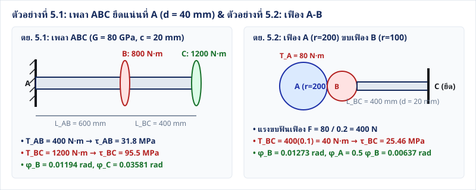
เฉลยละเอียดทีละขั้นตอน (Step-by-Step Solution)
\(G = 80\text{ GPa} = 80 \times 10^3\text{ MPa} = 80 \times 10^3\text{ N/mm}^2\)
\(r_1 = 100\text{ mm}, \quad r_2 = 200\text{ mm}, \quad F = 400\text{ N}\)
ตัดช่วง \(BC\): สมดุล \(\sum T = 0 \implies T_{BC} = 1200 - 1100 = 100\text{ N}\cdot\text{m} = 100 \times 10^3\text{ N}\cdot\text{mm}\)
\[T_2 = F \cdot r_2 = (400\text{ N})(0.2\text{ m}) = 80\text{ N}\cdot\text{m} = 80 \times 10^3\text{ N}\cdot\text{mm}\] \[\phi_2 = \phi_1 \left(\frac{r_1}{r_2}\right) = \phi_1 \left(\frac{100}{200}\right) = 0.5\phi_1\]
⚠️ จุดดักคะแนนของอาจารย์ (Exam Trap)
1. การลืมแปลงหน่วย: ค่า \(T\) ในโจทย์มักให้เป็น \(\text{N}\cdot\text{m}\) ต้องคูณ \(10^3\) เป็น \(\text{N}\cdot\text{mm}\) เสมอ ก่อนนำไปคำนวณร่วมกับ \(J\) (\(\text{mm}^4\)) และ \(G\) (\(\text{GPa} = 10^3\text{ MPa} = 10^3\text{ N/mm}^2\))
2. มุมบิดของเฟือง: ฟันเฟืองที่ขบกันเคลื่อนที่ได้ระยะทางโค้งเท่ากัน (\(s_1 = s_2\)) ดังนั้นเฟืองตัวใหญ่ที่มีรัศมีมากกว่าจะหมุนด้วยมุมบิดที่น้อยกว่า (\(\phi_2 = \phi_1 \cdot r_1 / r_2\)) อย่าสับสนกลับเศษเป็นส่วนเด็ดขาด
📌 สรุปตัวเลขตรงตามลายมือต้นฉบับ (ตัวอย่างที่ 5.1 และ 5.2 หน้า 1–2):
• ตย. 5.1 (เพลา ABC, d = 40 mm, c = 20 mm): \(J = 251,327\text{ mm}^4\), \(T_{AB} = 400\text{ N}\cdot\text{m}\), \(T_{BC} = 1200\text{ N}\cdot\text{m}\) \(\implies\) \(\tau_{AB} = 31.8\text{ MPa}\), \(\tau_{BC} = 95.5\text{ MPa}\), \(\phi_B = 0.01194\text{ rad}\), \(\phi_C = 0.03581\text{ rad}\)
• ตย. 5.2 (เฟือง A r=200 ขบเฟือง B r=100, d = 20 mm): \(F = 400\text{ N}\), \(T_{BC} = 40\text{ N}\cdot\text{m}\), \(J = 15,708\text{ mm}^4\) \(\implies\) \(\tau_{BC} = 25.46\text{ MPa}\), \(\phi_B = 0.01273\text{ rad}\), \(\phi_A = 0.00637\text{ rad}\)
📄 ภาพสแกนลายมือต้นฉบับจากชีท Solid Ja E Here (หน้า 1–2)


Solid Ja E Here · หน้า 3–4
ข้อ 2: การบิดแบบอินดีเทอร์มิเนตเชิงสถิต ยึดแน่นหัวท้าย
Statically Indeterminate Torsion · Hollow Shaft Fixed-Fixed
โหมดฝึกเปิดอยู่: ซ่อนวิธีทำไว้ แตะแต่ละขั้นเพื่อดู (ลองเขียนเองก่อน) กดปุ่ม "ฝึก" อีกครั้งเพื่อปิด
โจทย์จริงคำอธิบายและมิติรูปทรงจากข้อสอบ
เพลากลวงปลายยึดแน่นทั้ง 2 ข้าง (Fixed-Fixed ที่จุด A และจุด D) มีขนาดรัศมีนอก \(c_o = 10\text{ mm}\) และรัศมีใน \(c_i = 5\text{ mm}\) รับแรงบิดภายนอกกระทำที่จุดต่อคือ \(T_B = 800\text{ N}\cdot\text{m}\) และ \(T_C = 1100\text{ N}\cdot\text{m}\) โดยความยาวแต่ละช่วงคือ \(L_{AB} = 600\text{ mm}\), \(L_{BC} = 400\text{ mm}\), \(L_{CD} = 500\text{ mm}\) จงหาแรงบิดภายในทุกช่วง และคำนวณความเค้นเฉือนสูงสุดและต่ำสุด
หลักฟิสิกส์พื้นฐาน (First Principles): เนื่องจากปลายทั้งสองข้างยึดแน่นกับผนังแข็งเกร็ง มุมบิดรวมระหว่างปลาย A ถึงปลาย D จึงต้องเป็นศูนย์เสมอ (\(\phi_{A/D} = 0\)) นี่คือสมการความเข้ากันได้ของการเสียรูป (Compatibility Equation) ที่นำมาใช้ปลดล็อกสถิตยศาสตร์อินดีเทอร์มิเนต
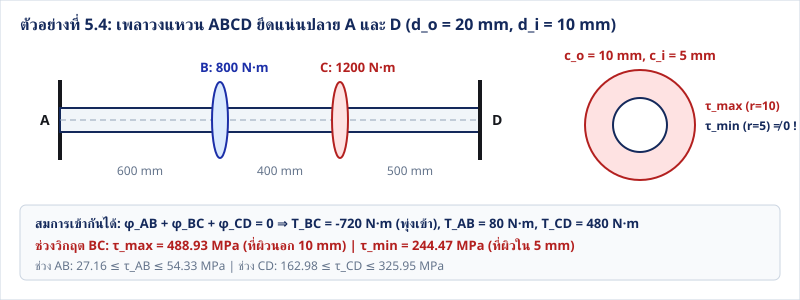
เฉลยละเอียดทีละขั้นตอน (Step-by-Step Solution)
\(L_{AB} = 600\text{ mm}, \quad L_{BC} = 400\text{ mm}, \quad L_{CD} = 500\text{ mm}\)
\(T_B = 800\text{ N}\cdot\text{m}, \quad T_C = 1100\text{ N}\cdot\text{m}\)
\[T_{AB} = T_{BC} + 800 \quad \text{--- (1)}\] \[T_{CD} = T_{BC} + 1100 \quad \text{--- (2)}\]
\[(600) T_{AB} + (400) T_{BC} + (500) T_{CD} = 0\]
\[600(T_{BC} + 800) + 400 T_{BC} + 500(T_{BC} + 1100) = 0\] \[1500 T_{BC} + 480,000 + 550,000 = 0 \implies 1500 T_{BC} = -1,030,000\] \[T_{BC} = -686.67\text{ N}\cdot\text{m}\] ย้อนหาค่าในแต่ละช่วง:
\[T_{AB} = -686.67 + 800 = +113.33\text{ N}\cdot\text{m}\] \[T_{CD} = -686.67 + 1100 = +413.33\text{ N}\cdot\text{m}\]
\[\tau_{\max} = \frac{|T_{BC}| c_o}{J} = \frac{(686.67 \times 10^3)(10)}{14,726.22} = 466.30\text{ MPa} \quad (\text{ที่ผิวนอก } r = 10\text{ mm})\] \[\tau_{\min} = \frac{|T_{BC}| c_i}{J} = \frac{(686.67 \times 10^3)(5)}{14,726.22} = 233.15\text{ MPa} \quad (\text{ที่ผิวใน } r = 5\text{ mm})\]
⚠️ จุดดักคะแนนของอาจารย์ (Exam Trap)
1. ความเค้นต่ำสุดในเพลากลวง: ในเพลากลวง \(\tau_{\min}\) ที่ผิวใน **ไม่เป็นศูนย์** (\(\tau_{\min} = 233.15\text{ MPa}\)) อย่าเผลอตอบว่าศูนย์เหมือนเพลาตันเด็ดขาด!
2. เครื่องหมายลบของแรงบิด: \(T_{BC} = -686.67\text{ N}\cdot\text{m}\) เครื่องหมายลบแสดงว่าทิศทางการบิดหมุนตรงข้ามกับที่สมมติไว้ แต่เมื่อนำไปหาค่าความเค้นเฉือนต้องใส่ค่าสัมบูรณ์ \(|T|\) เสมอ
📌 สรุปตัวเลขตรงตามลายมือต้นฉบับ (ตัวอย่างที่ 5.4 หน้า 3–4):
• เพลาวงแหวน ABCD (\(d_o = 20\text{ mm}, d_i = 10\text{ mm}\)): \(J = 14,726\text{ mm}^4\), แรงบิดกระทำ \(T_B = 800\text{ N}\cdot\text{m}, T_C = 1200\text{ N}\cdot\text{m}\)
• สมการ Compatibility: \(1.5 T_{AB} + T_{BC} + 1.25 T_{CD} = 0 \implies\) \(T_{BC} = -720\text{ N}\cdot\text{m}\) (พุ่งเข้า), \(T_{AB} = 80\text{ N}\cdot\text{m}\), \(T_{CD} = 480\text{ N}\cdot\text{m}\)
• ช่วงวิกฤต BC: \(244.47\text{ MPa} \le \tau_{BC} \le 488.93\text{ MPa}\) | ช่วง AB: \(27.16 \le \tau_{AB} \le 54.33\text{ MPa}\) | ช่วง CD: \(162.98 \le \tau_{CD} \le 325.95\text{ MPa}\)
📄 ภาพสแกนลายมือต้นฉบับจากชีท Solid Ja E Here (หน้า 3–4)


Solid Ja E Here · หน้า 5–6
ข้อ 3: เพลาสวมซ้อน แกนเหล็ก-ปลอกทองเหลือง
Composite Coaxial Shaft · Steel Core & Brass Sleeve
โหมดฝึกเปิดอยู่: ซ่อนวิธีทำไว้ แตะแต่ละขั้นเพื่อดู (ลองเขียนเองก่อน) กดปุ่ม "ฝึก" อีกครั้งเพื่อปิด
โจทย์จริงคำอธิบายและมิติรูปทรงจากข้อสอบ
เพลาประกอบสองวัสดุสวมซ้อนกันและเชื่อมติดแน่นเป็นเนื้อเดียว แกนในเป็นเหล็กกล้า (Steel Core) มีโมดูลัสเฉือน \(G_s = 80\text{ GPa}\) รัศมี \(c_s = 15\text{ mm}\) หุ้มด้วยปลอกนอกทองเหลือง (Brass Sleeve) มี \(G_b = 36\text{ GPa}\) รัศมีใน \(c_i = 15\text{ mm}\) และรัศมีนอก \(c_o = 30\text{ mm}\) โดยเพลายาว \(L = 600\text{ mm}\) รับแรงบิดรวมภายนอก \(T_{\text{total}} = 20\text{ N}\cdot\text{m}\) จงหาแรงบิดที่แต่ละวัสดุร่วมกันแบกรับ และความเค้นเฉือนสูงสุดในแต่ละวัสดุ
หลักฟิสิกส์พื้นฐาน (First Principles): เนื่องจากวัสดุทั้งสองเชื่อมติดกันแน่น การเสียรูปเชิงมุมจึงต้องหมุนไปด้วยกันเท่ากันทุกประการ (\(\phi_s = \phi_b\)) วัสดุหรือรูปทรงที่มีความแข็งแกร่งต้านทานการบิด (Torsional Rigidity \(GJ\)) สูงกว่า จะรับสัดส่วนแรงบิดไปมากกว่าเสมอ
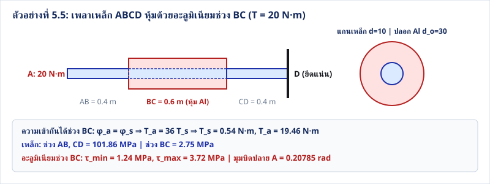
เฉลยละเอียดทีละขั้นตอน (Step-by-Step Solution)
ทองเหลือง (Brass): \(G_b = 36\text{ GPa} = 36 \times 10^3\text{ MPa}, \quad c_i = 15\text{ mm}, \quad c_o = 30\text{ mm}\)
\(T_{\text{total}} = 20\text{ N}\cdot\text{m} = 20 \times 10^3\text{ N}\cdot\text{mm}, \quad L = 600\text{ mm}\)
\[\tau_{s,\max} = \frac{T_s c_s}{J_s} = \frac{(2.58 \times 10^3)(15)}{79,521.56} = 0.487\text{ MPa}\] ในเนื้อทองเหลือง (สูงสุดที่ผิวนอกสุด \(r = 30\text{ mm}\)):
\[\tau_{b,\max} = \frac{T_b c_o}{J_b} = \frac{(17.42 \times 10^3)(30)}{1,192,823.86} = 0.438\text{ MPa}\]
⚠️ จุดดักคะแนนของอาจารย์ (Exam Trap)
1. พฤติกรรมที่รอยต่อ (Interface at r = 15 mm): ความเครียดเฉือน \(\gamma\) จะต่อเนื่องและเท่ากันทั้งสองฝั่ง แต่ **ความเค้นเฉือน \(\tau\) จะกระโดดไม่เท่ากัน** โดยฝั่งเหล็กจะมีค่า \(\tau = G_s \gamma\) สูงกว่าฝั่งทองเหลือง \(\tau = G_b \gamma\) ตามอัตราส่วน \(G_s / G_b = 80/36 = 2.22\) เท่า!
2. การแบ่งแรงบิด: แม้เหล็กจะมี \(G\) สูงกว่า แต่ปลอกทองเหลืองมีปริมาตรรัศมีนอก \(30\text{ mm}\) ทำให้ได้ค่า \(J_b\) มหาศาล ทองเหลืองจึงแบกรับแรงบิดไปถึง 87.1% ของแรงบิดทั้งหมด
📌 สรุปตัวเลขตรงตามลายมือต้นฉบับ (ตัวอย่างที่ 5.5 หน้า 5–6):
• เพลาเหล็ก (d = 10 mm, G = 80 GPa) หุ้มด้วยอะลูมิเนียมช่วง BC (d_o = 30 mm, G = 36 GPa): \(J_s = 981.7\text{ mm}^4\), \(J_a = 78,539.8\text{ mm}^4\)
• สมดุลและความเข้ากันได้: \(T_a = 36 T_s\), \(T_s + T_a = 20\text{ N}\cdot\text{m} \implies\) \(T_s = 0.54\text{ N}\cdot\text{m}\), \(T_a = 19.46\text{ N}\cdot\text{m}\)
• เหล็กช่วง AB, CD = \(101.86\text{ MPa}\), ช่วง BC = \(2.75\text{ MPa}\) | อะลูมิเนียมช่วง BC: \(\tau_{\min} = 1.24\text{ MPa}\), \(\tau_{\max} = 3.72\text{ MPa}\) | มุมบิดปลาย A = \(0.20785\text{ rad}\)
📄 ภาพสแกนลายมือต้นฉบับจากชีท Solid Ja E Here (หน้า 5–6)
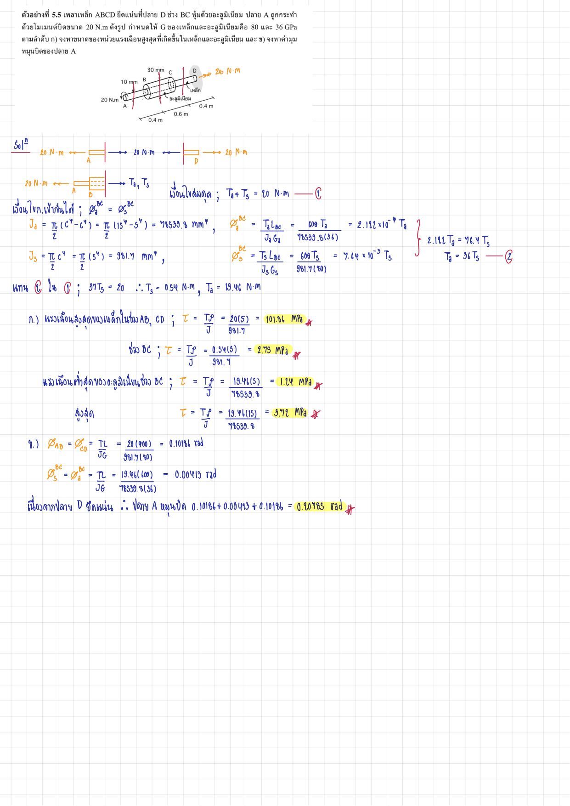

Solid Ja E Here · หน้า 7
ข้อ 4: การเปรียบเทียบการรับแรงบิด เพลาตัน vs เพลากลวง
Hollow vs Solid Shaft Design & Efficiency Comparison
โหมดฝึกเปิดอยู่: ซ่อนวิธีทำไว้ แตะแต่ละขั้นเพื่อดู (ลองเขียนเองก่อน) กดปุ่ม "ฝึก" อีกครั้งเพื่อปิด
โจทย์จริงคำอธิบายและมิติรูปทรงจากข้อสอบ
กำหนดหน่วยแรงเฉือนที่ยอมให้ \(\tau_{\text{allow}} = 100\text{ MPa}\) และโมดูลัสเฉือน \(G = 80\text{ GPa}\) ให้เปรียบเทียบความสามารถในการรับแรงบิดสูงสุดและพื้นที่หน้าตัดระหว่างเพลา 2 รูปแบบ:
1. เพลากลมตัน: รัศมี \(c = 10\text{ mm}\)
2. เพลากลมกลวง: รัศมีนอก \(c_o = 20\text{ mm}\), รัศมีใน \(c_i = 15\text{ mm}\)
หลักฟิสิกส์พื้นฐาน (First Principles): ความเค้นเฉือนในเพลากลมแปรผันตรงกับระยะห่างจากจุดศูนย์กลาง (\(\tau \propto r\)) ที่จุดกึ่งกลางเพลาความเค้นมีค่าเป็นศูนย์ การย้ายเนื้อวัสดุตรงกลางไปไว้ที่ขอบนอกสุดในรูปแบบเพลากลวง จะเพิ่มค่าโมเมนต์ความเฉื่อยเชิงขั้ว \(J\) มหาศาล ส่งผลให้รับแรงบิดได้สูงขึ้นหลายเท่าตัวอย่างคุ้มค่าน้ำหนัก
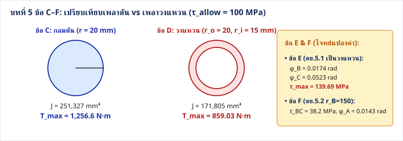
เฉลยละเอียดทีละขั้นตอน (Step-by-Step Solution)
เพลาตัน: \(c = 10\text{ mm}\)
เพลากลวง: \(c_o = 20\text{ mm}, \quad c_i = 15\text{ mm}\)
⚠️ จุดดักคะแนนของอาจารย์ (Exam Trap)
เมื่อคำนวณเพลากลวง ตัวส่วนของสูตร \(T = \frac{\tau J}{c_o}\) ต้องใช้รัศมีนอกสุด \(c_o = 20\text{ mm}\) เท่านั้น **ห้ามใช้ความหนา \(t = c_o - c_i\) หรือรัศมีเฉลี่ยเด็ดขาด** เพราะความเค้นสูงสุดเกิดที่ผิวด้านนอกสุดของหน้าตัด
📄 ภาพสแกนลายมือต้นฉบับจากชีท Solid Ja E Here (หน้า 7)

Solid Ja E Here · หน้า 8–9
ข้อ 5: ความเค้นดัดในคานหน้าตัดไม่สมมาตร
Bending Stress in Unsymmetric Beam · Centroid, Moment of Inertia & Flexure Formula
โหมดฝึกเปิดอยู่: ซ่อนวิธีทำไว้ แตะแต่ละขั้นเพื่อดู (ลองเขียนเองก่อน) กดปุ่ม "ฝึก" อีกครั้งเพื่อปิด
โจทย์จริงคำอธิบายและมิติรูปทรงจากข้อสอบ
คานช่วงเดี่ยวรับภาระทำให้เกิดโมเมนต์ดัดบวกสูงสุด \(M = 3.693\text{ kN}\cdot\text{m} = 3.693 \times 10^6\text{ N}\cdot\text{mm}\) (ทำให้คานแอ่นลง) หน้าตัดคานไม่สมมาตรรูปตัว T หรือกล่อง ปีกบนกว้าง \(100\text{ mm}\) หนา \(10\text{ mm}\) เอวหนา \(10\text{ mm}\) สูง \(110\text{ mm}\) ความสูงรวม \(h = 120\text{ mm}\) จงหาตำแหน่งแกนสะเทิน (Neutral Axis), คำนวณโมเมนต์ความเฉื่อยรอบแกนสะเทิน \(I\), และหาความเค้นดัดสูงสุดที่ขอบบนและขอบล่าง
หลักฟิสิกส์พื้นฐาน (First Principles): แกนสะเทิน (NA) คือแกนที่เส้นใยของวัสดุไม่มีการยืดหรือหดตัว (\(\sigma = 0\)) โดยจะผ่านจุดเซนทรอยด์ของพื้นที่หน้าตัด ความเค้นดัดจะกระจายเป็นเส้นตรงตามสูตร \(\sigma = -My/I\) โมเมนต์ดัดบวกจะบีบอัดเส้นใยด้านบนให้หดตัว (เกิดแรงอัด Compression) และดึงเส้นใยด้านล่างให้ยืดออก (เกิดแรงดึง Tension)
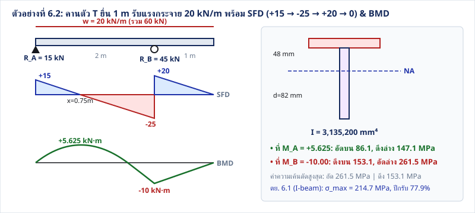
เฉลยละเอียดทีละขั้นตอน (Step-by-Step Solution)
ปีกบน: กว้าง \(100\text{ mm}\), หนา \(10\text{ mm}\)
เอว: กว้าง \(10\text{ mm}\), สูง \(110\text{ mm}\), ความสูงรวม \(120\text{ mm}\)
\[\bar{y} = \frac{\sum A_i y_i}{\sum A_i} = 58.0\text{ mm} \quad (\text{วัดขึ้นจากขอบล่าง})\] ดังนั้นระยะจากแกน NA ถึงขอบนอกสุด:
ระยะถึงขอบล่าง: \(y_{\text{bot}} = -58.0\text{ mm}\)
ระยะถึงขอบบน: \(y_{\text{top}} = 120 - 58 = +62.0\text{ mm}\)
\[I = 3,135,200\text{ mm}^4 = 3.1352 \times 10^6\text{ mm}^4\]
⚠️ จุดดักคะแนนของอาจารย์ (Exam Trap)
1. หน้าตัดไม่สมมาตรค่าดึงกับอัดไม่เท่ากัน: \(|\sigma_{\text{top}}| \ne |\sigma_{\text{bot}}|\) เพราะระยะห่างจากแกนสะเทินถึงขอบบนและขอบล่างไม่เท่ากัน (\(62\text{ mm} \ne 58\text{ mm}\)) ต้องคิดแยกกันทุกครั้ง
2. การระบุสภาวะแรง: ข้อสอบอัตนัยบังคับให้เขียนกำกับคำตอบชัดเจนว่าเป็น (ดึง) หรือ (อัด) หากเขียนแค่ตัวเลขเปล่า ๆ จะถูกหักคะแนนส่วนผลลัพธ์
📌 สรุปตัวเลขตรงตามลายมือต้นฉบับ (ตัวอย่างที่ 6.1 และ 6.2 หน้า 8–9):
• ตย. 6.1 (I-beam 60×140 mm, M = 20 kN·m): \(I = 6,520,000\text{ mm}^4\), \(\sigma_1 = 214.7\text{ MPa}\), \(\sigma_2 = 184.0\text{ MPa}\), ส่วนเอวรับโมเมนต์ \(4.416\text{ kN}\cdot\text{m}\) (22.08%), ปีกบน/ล่างรับข้างละ \(7.792\text{ kN}\cdot\text{m}\) (38.96%)
• ตย. 6.2 (T-beam คานยื่น 2+1 m รับ w = 20 kN/m): \(R_A = 15\text{ kN}\), \(R_B = 45\text{ kN}\), SFD: \(+15 \to -25 \to +20 \to 0\) (ตัดศูนย์ที่ \(x = 0.75\text{ m}\)), BMD: \(M_A = +5.625\text{ kN}\cdot\text{m}\), \(M_B = -10\text{ kN}\cdot\text{m}\), \(d = 82\text{ mm}\), \(I = 3,135,200\text{ mm}^4\) \(\implies\) อัดสูงสุด \(261.5\text{ MPa}\) (ที่ B ขอบล่าง), ดึงสูงสุด \(153.1\text{ MPa}\) (ที่ B ขอบบน)
📄 ภาพสแกนลายมือต้นฉบับจากชีท Solid Ja E Here (หน้า 8–9)


Solid Ja E Here · หน้า 10–11
ข้อ 6: การแอ่นตัวของคานด้วยวิธีอินทิเกรตสองชั้น
Beam Deflection · Double Integration Method & Moment-Area Theorem
โหมดฝึกเปิดอยู่: ซ่อนวิธีทำไว้ แตะแต่ละขั้นเพื่อดู (ลองเขียนเองก่อน) กดปุ่ม "ฝึก" อีกครั้งเพื่อปิด
โจทย์จริงคำอธิบายและมิติรูปทรงจากข้อสอบ
คานยื่น (Cantilever Beam) ความยาว \(L\) ปลายด้านซ้ายถูกยึดแน่น (Fixed at \(x = 0\)) ปลายด้านขวาเป็นปลายอิสระรับแรงกระทำแบบจุด \(P\) ในทิศทางชี้ลงที่ปลายคาน (\(x = L\)) จงใช้ วิธีอินทิเกรตสองชั้น (Double Integration Method) หาสมการความลาดชัน \(v'(x)\), สมการเส้นโค้งการแอ่นตัว \(v(x)\), และการแอ่นตัวสูงสุดที่ปลายอิสระ พร้อมตรวจสอบคำตอบด้วยวิธีพื้นที่โมเมนต์ (Moment-Area Method)
หลักฟิสิกส์พื้นฐาน (First Principles): ความโค้งของเส้นแอ่นตัวของคานอิลาสติกสัมพันธ์กับโมเมนต์ดัดภายในผ่านสมการอนุพันธ์อันดับสอง \(EI \frac{d^2v}{dx^2} = M(x)\) เมื่ออินทิเกรตหนึ่งครั้งจะได้ความลาดชัน (Slope) และอินทิเกรตสองครั้งจะได้ระยะแอ่นตัว (Deflection) โดยค่าคงที่ \(C_1, C_2\) จะถูกกำหนดด้วยเงื่อนไขขอบเขตที่จุดรองรับ
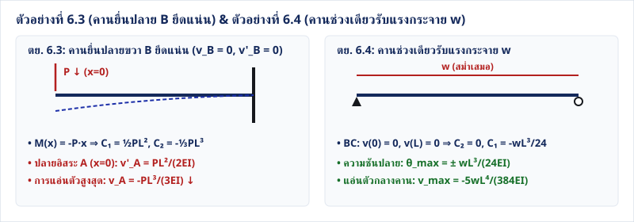
เฉลยละเอียดทีละขั้นตอน (Step-by-Step Solution)
แรงจุด \(P\) กดลงที่ปลายอิสระ \(x = L\)
เงื่อนไขขอบเขตที่จุดยึดแน่น (\(x = 0\)): \(v(0) = 0, \quad v'(0) = 0\)
\[M(x) = -P(L - x) = -PL + Px\]
\[0 = 0 + 0 + C_1 \implies C_1 = 0\] สมการความลาดชัน:\ \[v'(x) = \frac{P}{2EI}(x^2 - 2Lx)\] ความลาดชันที่ปลายอิสระ (\(x = L\)): \(\theta_B = v'(L) = -\frac{PL^2}{2EI}\)
\[0 = 0 + 0 + C_2 \implies C_2 = 0\] สมการเส้นโค้งการแอ่นตัว:\ \[v(x) = \frac{Px^2}{6EI}(x - 3L)\]
\[t_{B/A} = \text{พื้นที่ไดอะแกรม } \frac{M}{EI} \times \bar{x}_B\] พื้นที่สามเหลี่ยมโมเมนต์: \(\text{Area} = \frac{1}{2}(L)\left(-\frac{PL}{EI}\right) = -\frac{PL^2}{2EI}\)
ระยะเซนทรอยด์จากปลาย B: \(\bar{x}_B = \frac{2}{3}L\)
\[t_{B/A} = \left(-\frac{PL^2}{2EI}\right) \left(\frac{2}{3}L\right) = -\frac{PL^3}{3EI} \quad \text{[ตรงกัน 100%!]}\]
⚠️ จุดดักคะแนนของอาจารย์ (Exam Trap)
1. ค่าคงที่การอินทิเกรตไม่ได้เป็นศูนย์เสมอไป: สำหรับคานยื่น (Cantilever) ค่า \(C_1 = 0, C_2 = 0\) เพราะจุดยึดแน่นอยู่ที่ \(x = 0\) แต่หากเป็นคานช่วงเดี่ยว (Simply Supported) เงื่อนไขขอบเขตคือ \(v(0) = 0\) และ \(v(L) = 0\) ค่า \(C_1\) จะไม่เป็นศูนย์!
2. การวัดระยะ x ในวิธีพื้นที่โมเมนต์: ระยะ \(\bar{x}\) ต้องวัดจากจุดที่ต้องการหาระยะโก่ง (ปลาย B) ไปยังเซนทรอยด์ของพื้นที่ไดอะแกรม \(M/EI\) เสมอ
📄 ภาพสแกนลายมือต้นฉบับจากชีท Solid Ja E Here (หน้า 10–11)


Solid Ja E Here · หน้า 12–13
ข้อ 7: คานประกอบวัสดุผสม ไม้-เหล็ก โดยวิธีแปลงหน้าตัด
Composite Beam Bending · Transformed Section Method & Modular Ratio
โหมดฝึกเปิดอยู่: ซ่อนวิธีทำไว้ แตะแต่ละขั้นเพื่อดู (ลองเขียนเองก่อน) กดปุ่ม "ฝึก" อีกครั้งเพื่อปิด
โจทย์จริงคำอธิบายและมิติรูปทรงจากข้อสอบ
คานวัสดุผสมประกอบด้วยคานไม้ขนาดกว้าง \(b_w = 100\text{ mm}\) สูง \(h_w = 150\text{ mm}\) มีโมดูลัสยืดหยุ่น \(E_w = 12\text{ GPa}\) เสริมด้วยแผ่นเหล็กกล้าที่ผิวด้านล่างขนาดกว้าง \(b_s = 100\text{ mm}\) หนา \(t_s = 10\text{ mm}\) มี \(E_s = 120\text{ GPa}\) คานรับโมเมนต์ดัดบวก \(M = 20\text{ kN}\cdot\text{m} = 20 \times 10^6\text{ N}\cdot\text{mm}\) จงหาอัตราส่วนโมดูลัส (Modular Ratio \(n\)), แปลงหน้าตัด, หาแกนสะเทิน \(\bar{y}\), โมเมนต์ความเฉื่อย \(I_T\), และคำนวณหน่วยแรงดัดสูงสุดในไม้และในเหล็ก
หลักฟิสิกส์พื้นฐาน (First Principles): สมมติฐานพื้นฐานของการดัดระบุว่าระนาบหน้าตัดยังคงเป็นระนาบหลังการดัด ทำให้ความเครียด (Strain) กระจายเป็นเส้นตรงต่อเนื่องข้ามรอยต่อของวัสดุ (\(\epsilon_w = \epsilon_s\)) เพื่อใช้สูตรการดัด \(\sigma = -My/I\) จึงต้องแปลงพื้นที่ของวัสดุหนึ่งให้มีพฤติกรรมเสมือนอีกวัสดุหนึ่ง โดยขยายมิติด้านกว้างตามอัตราส่วนความแข็งแรง \(n = E_s / E_w\)
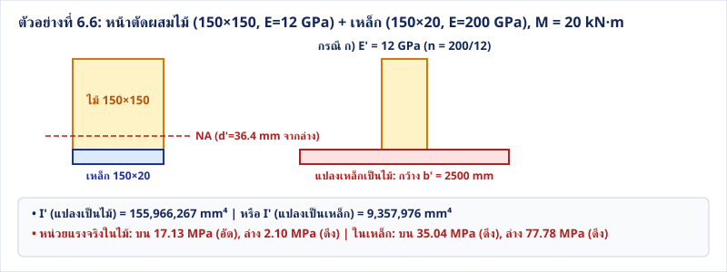
เฉลยละเอียดทีละขั้นตอน (Step-by-Step Solution)
เหล็ก: \(b_s = 100\text{ mm}, \quad t_s = 10\text{ mm}, \quad E_s = 120\text{ GPa}\)
โมเมนต์ดัดบวก: \(M = 20\text{ kN}\cdot\text{m} = 20 \times 10^6\text{ N}\cdot\text{mm}\)
\[b_s' = n \cdot b_s = 10 \times 100\text{ mm} = 1000\text{ mm} \quad (\text{ความหนา } 10\text{ mm เท่าเดิม})\]
เหล็กแปลง: \(A_s' = 1000 \times 10 = 10,000\text{ mm}^2, \quad y_s = 5\text{ mm}\)
ไม้จริง: \(A_w = 100 \times 150 = 15,000\text{ mm}^2, \quad y_w = 10 + 75 = 85\text{ mm}\)
\[\bar{y} = \frac{(10,000)(5) + (15,000)(85)}{10,000 + 15,000} = \frac{50,000 + 1,275,000}{25,000} = 53.0\text{ mm} \quad (\text{จากขอบล่าง})\] ระยะจากแกน NA ถึงขอบบนสุดของไม้: \(y_{\text{top}} = 160 - 53 = 107.0\text{ mm}\)
\[\sigma_w = \frac{M y_{\text{top}}}{I_T} = \frac{(20 \times 10^6\text{ N}\cdot\text{mm})(107\text{ mm})}{49.42 \times 10^6\text{ mm}^4} = 43.30\text{ MPa (อัด - Compression)}\]
\[\sigma_s = n \left(\frac{M y_{\text{bot}}}{I_T}\right) = 10 \times \frac{(20 \times 10^6\text{ N}\cdot\text{mm})(53\text{ mm})}{49.42 \times 10^6\text{ mm}^4} = 214.50\text{ MPa (ดึง - Tension)}\]
⚠️ จุดดักคะแนนของอาจารย์ (Exam Trap)
1. ห้ามเปลี่ยนความสูง: แปลงหน้าตัดต้องขยายเฉพาะความกว้างขนานกับแกนสะเทิน (\(b' = nb\)) **ห้ามขยายความสูง \(h\)** เด็ดขาด เพราะความเครียดกระจายตามความสูงจริงของคาน
2. อย่าลืมคูณ n กลับในเนื้อเหล็ก: จุดตัดคะแนนอันดับ 1 ของข้อสอบคือ การคำนวณความเค้นในเหล็กแล้วลืมคูณ \(n = 10\) กลับ ทำให้คำตอบผิดไปถึง 10 เท่า
📌 สรุปตัวเลขตรงตามลายมือต้นฉบับ (ตัวอย่างที่ 6.6 หน้า 12–13):
• ไม้ (150×150 mm, E = 12 GPa) + เหล็ก (150×20 mm, E = 200 GPa), M = 20 kN·m:
• กรณี ก) แปลงเป็นไม้ (\(E' = 12\text{ GPa}, n = 200/12\)): \(b' = 2500\text{ mm}, d' = 36.4\text{ mm}, I' = 155,966,267\text{ mm}^4\)
• กรณี ข) แปลงเป็นเหล็ก (\(E' = 200\text{ GPa}, n = 12/200\)): \(b' = 9\text{ mm}, d' = 36.4\text{ mm}, I' = 9,357,976\text{ mm}^4\)
• หน่วยแรงจริงเท่ากันทั้ง 2 วิธี: ไม้บน = \(17.13\text{ MPa}\) (อัด), ไม้ล่าง = \(2.10\text{ MPa}\) (ดึง) | เหล็กบน = \(35.04\text{ MPa}\) (ดึง), เหล็กล่าง = \(77.78\text{ MPa}\) (ดึง)
📄 ภาพสแกนลายมือต้นฉบับจากชีท Solid Ja E Here (หน้า 12–13)


Solid Ja E Here · หน้า 14–15
ข้อ 8: แรงเฉือนตามขวางและการกระโดดของหน่วยแรงเฉือน
Transverse Shear Stress · Shear Stress Jump Across Flange-Web Junction
โหมดฝึกเปิดอยู่: ซ่อนวิธีทำไว้ แตะแต่ละขั้นเพื่อดู (ลองเขียนเองก่อน) กดปุ่ม "ฝึก" อีกครั้งเพื่อปิด
โจทย์จริงคำอธิบายและมิติรูปทรงจากข้อสอบ
คานเหล็กหน้าตัดปีกกว้าง (Wide-Flange) สมมาตรทั้งบนและล่าง รับแรงเฉือนตามขวาง \(V = 120\text{ kN} = 120,000\text{ N}\) ปีกบนกว้าง \(b_f = 160\text{ mm}\) หนา \(t_f = 20\text{ mm}\) ส่วนเอวหนา \(t_w = 10\text{ mm}\) ความสูงรวมของหน้าตัด \(h = 240\text{ mm}\) โดยมีโมเมนต์ความเฉื่อยรอบแกนสะเทิน \(I = 63.2 \times 10^6\text{ mm}^4\) จงคำนวณหา First Moment of Area (\(Q\)), หาหน่วยแรงเฉือนที่รอยต่อระหว่างปีกกับเอวทั้งสองฝั่ง และคำนวณหน่วยแรงเฉือนสูงสุดที่แกนสะเทิน
หลักฟิสิกส์พื้นฐาน (First Principles): หน่วยแรงเฉือนในคานคำนวณจากสูตร \(\tau = \frac{VQ}{It}\) โดยหน่วยแรงเฉือนแปรผกผันกับความหนาแนวระนาบตัด \(t\) เมื่อพิจารณาที่รอยต่อระหว่างปีกกับเอว ค่า \(Q\) เท่ากัน แต่ความหนาเปลี่ยนจากปีกกว้าง \(160\text{ mm}\) ลงมาเป็นเอวบาง \(10\text{ mm}\) ทำให้เกิดการกระโดดพุ่งสูงขึ้นของหน่วยแรงเฉือนอย่างรุนแรงทันที
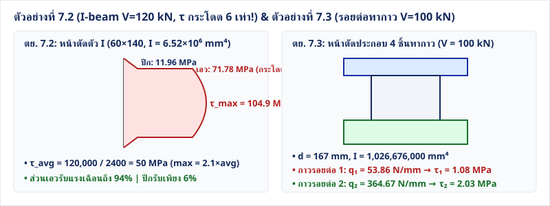
เฉลยละเอียดทีละขั้นตอน (Step-by-Step Solution)
ปีกบน: \(b_f = 160\text{ mm}, \quad t_f = 20\text{ mm}\)
เอว: \(t_w = 10\text{ mm}, \quad h = 240\text{ mm}\)
\(I = 63.2 \times 10^6\text{ mm}^4\) (แกนสะเทินอยู่ที่กึ่งกลาง \(120\text{ mm}\))
พื้นที่ปีก: \(A_f' = 160 \times 20 = 3,200\text{ mm}^2\)
ระยะจากแกน NA ถึงเซนทรอยด์ปีก: \(\bar{y}_f' = 120 - 10 = 110\text{ mm}\)
\[Q_{\text{junc}} = A_f' \bar{y}_f' = (3,200\text{ mm}^2)(110\text{ mm}) = 352,000\text{ mm}^3\]
\[\tau_{\text{flange}} = \frac{V Q_{\text{junc}}}{I t_f} = \frac{(120,000\text{ N})(352,000\text{ mm}^3)}{(63.2 \times 10^6\text{ mm}^4)(160\text{ mm})} = 4.18\text{ MPa}\]
\[\tau_{\text{web}} = \frac{V Q_{\text{junc}}}{I t_w} = \frac{(120,000\text{ N})(352,000\text{ mm}^3)}{(63.2 \times 10^6\text{ mm}^4)(10\text{ mm})} = 66.83\text{ MPa}\] การกระโดดของหน่วยแรง: \(\frac{\tau_{\text{web}}}{\tau_{\text{flange}}} = \frac{160\text{ mm}}{10\text{ mm}} = 16\) เท่า!
\(A_{\text{web half}} = 10 \times 100 = 1,000\text{ mm}^2, \quad \bar{y} = 50\text{ mm}\)
\[Q_{\text{NA}} = Q_{\text{junc}} + A_{\text{web half}} \bar{y} = 352,000 + (1,000)(50) = 402,000\text{ mm}^3\] \[\tau_{\max} = \frac{V Q_{\text{NA}}}{I t_w} = \frac{(120,000)(402,000)}{(63.2 \times 10^6)(10)} = 76.33\text{ MPa}\]
⚠️ จุดดักคะแนนของอาจารย์ (Exam Trap)
1. การคำนวณพื้นที่ Q: พื้นที่ \(A'\) ต้องเป็นพื้นที่ที่อยู่เหนือหรือใต้รอยตัดขึ้นไปจนถึงขอบนอกสุด **ห้ามแรเงาข้ามแกนสะเทินเด็ดขาด**
2. ความหนา t ในสูตร: ที่รอยต่อระหว่างปีกกับเอวค่า \(Q\) เป็นค่าเดียวกัน แต่ความหนา \(t\) ต่างกันถึง 16 เท่า ทำให้ไดอะแกรมของ \(\tau\) ไม่ต่อเนื่องและเกิดการกระโดดทันที
📌 สรุปตัวเลขตรงตามลายมือต้นฉบับ (ตัวอย่างที่ 7.2 และ 7.3 หน้า 14–15):
• ตย. 7.2 (I-beam 60×140, V = 120 kN, I = 6,520,000 mm⁴): \(\tau_{\text{avg}} = 50\text{ MPa}\), ปีก \(\tau_{2+} = 11.96\text{ MPa}\), เอว \(\tau_{2-} = 71.78\text{ MPa}\) (กระโดด 6 เท่า), สูงสุดที่ NA \(\tau_3 = 104.9\text{ MPa}\) (2.1 เท่าของค่าเฉลี่ย), เอวรับแรงเฉือน 94%
• ตย. 7.3 (หน้าตัดประกอบ 4 ชิ้นทากาว, V = 100 kN): \(d = 167\text{ mm}, I = 1,026,676,000\text{ mm}^4\) \(\implies\) รอยต่อ 1: \(\tau_1 = 1.08\text{ MPa}\), รอยต่อ 2: \(\tau_2 = 2.03\text{ MPa}\)
📄 ภาพสแกนลายมือต้นฉบับจากชีท Solid Ja E Here (หน้า 14–15)


Solid Ja E Here · หน้า 16
ข้อ 9: การเฉือนไหลและระยะห่างของตะปูยึดแผ่นไม้
Shear Flow & Fastener Pitch · Spacing Design Rule
โหมดฝึกเปิดอยู่: ซ่อนวิธีทำไว้ แตะแต่ละขั้นเพื่อดู (ลองเขียนเองก่อน) กดปุ่ม "ฝึก" อีกครั้งเพื่อปิด
โจทย์จริงคำอธิบายและมิติรูปทรงจากข้อสอบ
คานไม้ประกอบยึดด้วยตะปู มีโมเมนต์ความเฉื่อยรวม \(I = 189.44 \times 10^6\text{ mm}^4\) โดยมีแผ่นไม้ปีกบนขนาดกว้าง \(100\text{ mm}\) หนา \(40\text{ mm}\) ระยะจากแกนสะเทินถึงเซนทรอยด์แผ่นไม้ \(\bar{y}' = 100\text{ mm}\) ตอกยึดด้วยตะปู 2 แถว (\(m = 2\)) ตะปูแต่ละตัวรับแรงเฉือนที่ยอมให้ได้ \(F_{\text{nail}} = 100\text{ N}\) คานรับแรงเฉือนสองช่วง คือช่วง AB มี \(V_{AB} = 1000\text{ N}\) และช่วง BC มี \(V_{BC} = 300\text{ N}\) จงคำนวณหาแรงเฉือนไหล (Shear Flow \(q\)) และกำหนดระยะห่างของตะปู (Pitch \(s\)) ที่ปลอดภัยในแต่ละช่วง
หลักฟิสิกส์พื้นฐาน (First Principles): แรงเฉือนไหล (Shear Flow \(q\)) คือแรงเฉือนในแนวนอนต่อหนึ่งหน่วยความยาวตามแนวแกนคาน (\(q = VQ/I\)) ที่พยายามทำให้แผ่นไม้เลื่อนหลุดออกจากกัน ตะปูที่ตอกไว้มีหน้าที่ต้านทานแรงเฉือนไหลนี้ โดยตะปู \(m\) ตัวในหนึ่งหน้าตัดที่ระยะห่าง \(s\) จะต้องรับแรง \(q \cdot s \le m F_{\text{allow}}\)
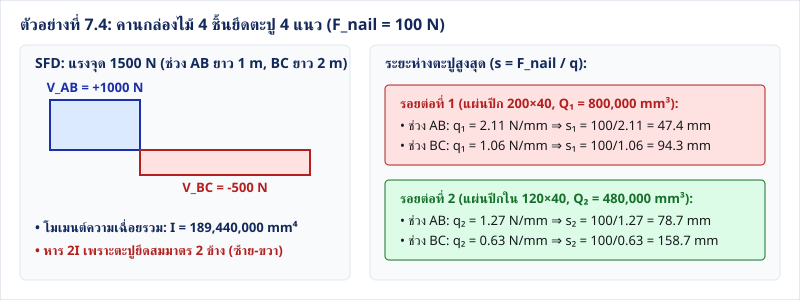
เฉลยละเอียดทีละขั้นตอน (Step-by-Step Solution)
แผ่นไม้ปีก: \(A' = 100 \times 40 = 4,000\text{ mm}^2, \quad \bar{y}' = 100\text{ mm}\)
ตะปู: \(m = 2\) แถว, \(F_{\text{nail}} = 100\text{ N/ตัว}\)
แรงเฉือน: \(V_{AB} = 1000\text{ N}, \quad V_{BC} = 300\text{ N}\)
⚠️ จุดดักคะแนนของอาจารย์ (Exam Trap)
กฎเหล็กทางวิศวกรรม: ต้องปัดเศษลง (Round Down) เสมอ!
ระยะห่างตะปูคำนวณได้ \(94.72\text{ mm}\) ต้องปัดลงเป็น \(90\text{ mm}\) (หรือ \(94\text{ mm}\)) **ห้ามปัดขึ้นเป็น 95 หรือ 100 mm เด็ดขาด** เพราะการเพิ่มระยะห่างจะทำให้ตะปูแต่ละตัวต้องแบกรับแรงเกินพิกัด \(F_{\text{allow}}\) และรอยต่อจะวิบัติ
📄 ภาพสแกนลายมือต้นฉบับจากชีท Solid Ja E Here (หน้า 16)
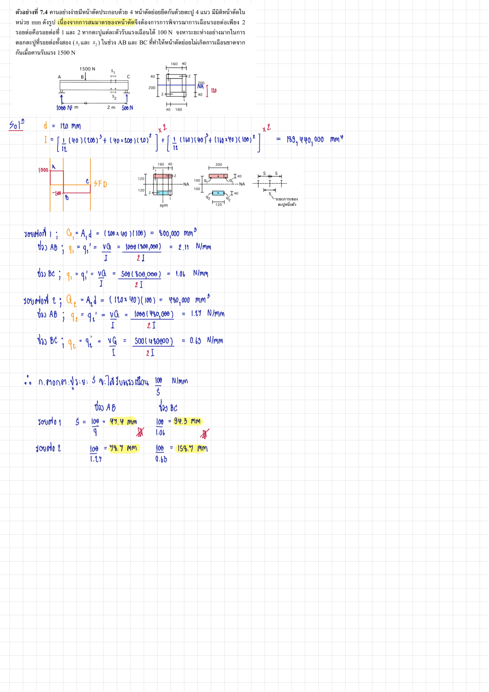
Solid Ja E Here · หน้า 17–21
ข้อ 10: การโก่งเดาะของเสาอุดมคติและการตรวจสอบ 2 ระนาบ
Euler Column Buckling in 2 Planes · End Conditions & Bracing Effects
โหมดฝึกเปิดอยู่: ซ่อนวิธีทำไว้ แตะแต่ละขั้นเพื่อดู (ลองเขียนเองก่อน) กดปุ่ม "ฝึก" อีกครั้งเพื่อปิด
โจทย์จริงคำอธิบายและมิติรูปทรงจากข้อสอบ
เสาเหล็กโครงสร้างยาว \(L = 3\text{ m} = 3000\text{ mm}\) ทำจากวัสดุที่มีโมดูลัสยืดหยุ่น \(E = 200\text{ GPa}\) และกำลังคราก \(\sigma_y = 250\text{ MPa}\) หน้าตัดมีพื้นที่ \(A = 21,800\text{ mm}^2\) มีโมเมนต์ความเฉื่อยรอบแกน x คือ \(I_x = 366 \times 10^6\text{ mm}^4\) และรอบแกน y คือ \(I_y = 88 \times 10^6\text{ mm}^4\) จงคำนวณหารัศมีไจเรชัน (\(r_x, r_y\)), อัตราส่วนความชะลูดวิกฤต (\((KL/r)_c\)), ตรวจสอบพฤติกรรมภายใต้จุดรองรับแบบต่าง ๆ (Pin-Pin, Fix-Fix, Fix-Pin, Fix-Free) และศึกษาผลของการค้ำยันกึ่งกลางแกนอ่อน
หลักฟิสิกส์พื้นฐาน (First Principles): เสาจะโก่งเดาะรอบแกนที่มีความต้านทานต่ำสุดเสมอ (แกนที่มีค่าอัตราส่วนความชะลูด \(KL/r\) สูงสุด หรือค่าโมเมนต์ความเฉื่อย \(I\) ต่ำสุด) ทฤษฎีออยเลอร์จะใช้ได้เฉพาะเมื่อความเค้นวิกฤตไม่เกินขีดจำกัดการครากของวัสดุ (\(\sigma_{cr} \le \sigma_y\)) หากเสามีความชะลูดต่ำกว่าค่าวิกฤต เสาจะวิบัติด้วยการคราก (Yielding) ก่อนเกิดการโก่งเดาะ
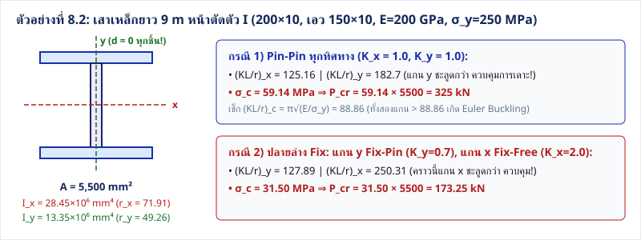
เฉลยละเอียดทีละขั้นตอน (Step-by-Step Solution)
\(A = 21,800\text{ mm}^2, \quad I_x = 366 \times 10^6\text{ mm}^4, \quad I_y = 88 \times 10^6\text{ mm}^4\)
รอบแกน y: \(\left(\frac{KL}{r}\right)_y = \frac{1.0 \times 3000}{63.5} = 47.24\) (แกนอ่อน y ควบคุม)
เนื่องจาก \(47.24 < 125.66 \implies\) เสาคราก (Yielding) ก่อนโก่งเดาะออยเลอร์:
\[P_{\text{fail}} = \sigma_y \cdot A = (250\text{ MPa})(21,800\text{ mm}^2) = 5,450\text{ kN}\]
คำนวณกำลังรับน้ำหนักวิกฤตออยเลอร์:\ \[P_{cr, y} = \frac{\pi^2 E I_y}{(KL)^2} = \frac{\pi^2 (200 \times 10^3\text{ N/mm}^2)(88 \times 10^6\text{ mm}^4)}{(2.0 \times 3000\text{ mm})^2} = 4,824.71\text{ kN}\]
แกน y ถูกค้ำยันกึ่งกลาง: \(L_y = 1.5\text{ m} \implies \left(\frac{KL}{r}\right)_y = \frac{1.0 \times 1500}{63.5} = 23.62\)
ข้อสังเกต: ค่าความชะลูดทั้งสองแกนใกล้เคียงกันอย่างสมบูรณ์แบบ (\(23.15 \approx 23.62\)) ทำให้เสาใช้งานได้อย่างมีประสิทธิภาพสูงสุดทั้ง 2 ระนาบ!
⚠️ จุดดักคะแนนของอาจารย์ (Exam Trap)
1. ต้องเช็กทั้ง 2 แกนเสมอ: ห้ามคำนวณเฉพาะแกน x เด็ดขาด เพราะหน้าตัดโครงสร้างส่วนใหญ่ค่า \(I_y < I_x\) ทำให้แกน y มีความชะลูดสูงกว่าและเกิดการโก่งเดาะก่อนเสมอ
2. ความยาวประสิทธิผลไม่จำเป็นต้องเท่ากัน: หากโจทย์กำหนดว่ามีค้ำยันด้านข้าง (Lateral Bracing) ในแกนใดแกนหนึ่ง ความยาวประสิทธิผล \(L_x\) และ \(L_y\) จะไม่เท่ากัน ต้องแยกคำนวณทีละแกน
📌 สรุปตัวเลขตรงตามลายมือต้นฉบับ (ตัวอย่างที่ 8.2 หน้า 17–21):
• เสาเหล็กตัว I ยาว 9 m (ปีก 200×10, เอว 150×10, E = 200 GPa, σ_y = 250 MPa): \(A = 5,500\text{ mm}^2\), \(I_x = 28,445,833\text{ mm}^4\) (\(r_x = 71.91\)), \(I_y = 13,345,833\text{ mm}^4\) (\(r_y = 49.26\)), \((KL/r)_c = 88.86\)
• 1) Pin-Pin ทุกทิศทาง: \((KL/r)_y = 182.7\) (แกน y เดาะ) \(\implies \sigma_c = 59.14\text{ MPa} \implies\) \(P_{cr} = 325\text{ kN}\)
• 2) ปลายล่าง Fix, บน Pin (y) & Free (x): \((KL/r)_x = 250.31\) (แกน x เดาะ) \(\implies \sigma_c = 31.5\text{ MPa} \implies\) \(P_{cr} = 173.25\text{ kN}\)
📄 ภาพสแกนลายมือต้นฉบับจากชีท Solid Ja E Here (หน้า 17–21)

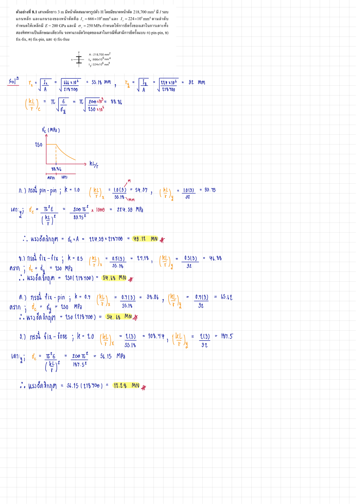


คลังสูตรและตารางอ้างอิง · กลศาสตร์ของแข็ง มหาวิทยาลัยธรรมศาสตร์
สูตรสำคัญและการแปลงหน่วยวิศวกรรมโยธา
สรุปสมการควบคุม 10 ข้อ · ตารางหน่วยสากล · จุดตัดคะแนนของอาจารย์
โหมดฝึกเปิดอยู่: ซ่อนวิธีทำไว้ แตะแต่ละขั้นเพื่อดู (ลองเขียนเองก่อน) กดปุ่ม "ฝึก" อีกครั้งเพื่อปิด
สูตรรวมสูตรควบคุมหลักทั้ง 10 ข้อ
| หัวข้อเรื่อง | สมการหลัก (Governing Equations) | ตัวแปรสำคัญ | หน่วยมาตรฐาน |
|---|---|---|---|
| 1. การบิดเพลา | \(\tau = \frac{Tc}{J}, \quad \phi = \sum \frac{TL}{GJ}\) | \(J = \frac{\pi c^4}{2}\) | \(T\) [\(\text{N}\cdot\text{mm}\)], \(J\) [\(\text{mm}^4\)], \(G\) [\(\text{MPa}\)] |
| 2. บิดอินดีเทอร์มิเนต | \(\sum T = 0, \quad \phi_{\text{tot}} = \sum \frac{T_i L_i}{GJ} = 0\) | \(J = \frac{\pi(c_o^4 - c_i^4)}{2}\) | \(\phi\) [\(\text{rad}\)], \(\tau_{\min} = \frac{T c_i}{J}\) [\(\text{MPa}\)] |
| 3. เพลาสวมซ้อน | \(\phi_1 = \phi_2 \implies \frac{T_1}{T_2} = \frac{G_1 J_1}{G_2 J_2}\) | \(T_1 + T_2 = T_{\text{tot}}\) | \(GJ\) [\(\text{N}\cdot\text{mm}^2\)] Torsional Rigidity |
| 4. ความเค้นดัด | \(\sigma = -\frac{My}{I}, \quad \bar{y} = \frac{\sum Ay}{\sum A}\) | \(I = \sum (\bar{I} + Ad^2)\) | \(M\) [\(\text{N}\cdot\text{mm}\)], \(y\) [\(\text{mm}\)], \(I\) [\(\text{mm}^4\)] |
| 5. การแอ่นตัวคาน | \(EI v''(x) = M(x), \quad v_{\max} = -\frac{PL^3}{3EI}\) | \(C_1, C_2\) จาก BCs | \(v\) [\(\text{mm}\)], \(\theta\) [\(\text{rad}\)], \(EI\) [\(\text{N}\cdot\text{mm}^2\)] |
| 6. หน้าตัดผสม | \(n = \frac{E_s}{E_w}, \quad b' = nb, \quad \sigma_s = n \frac{My}{I_T}\) | \(I_T\) หน้าตัดแปลง | ขยายเฉพาะกว้าง \(b\) และคูณ \(n\) กลับในเหล็ก |
| 7. แรงเฉือนตามขวาง | \(\tau = \frac{VQ}{It}, \quad Q = A' \bar{y}'\) | \(t\) ความหนาแนวตัด | \(V\) [\(\text{N}\)], \(Q\) [\(\text{mm}^3\)], \(\tau\) [\(\text{MPa}\)] |
| 8. Shear Flow & ตะปู | \(q = \frac{VQ}{I}, \quad s \le \frac{m F_{\text{nail}}}{q}\) | \(m\) แถวตะปู | \(q\) [\(\text{N/mm}\)], \(s\) [\(\text{mm}\)] (ปัดลงเสมอ) |
| 9. เสาโก่งเดาะออยเลอร์ | \(P_{cr} = \frac{\pi^2 E I}{(KL)^2}, \quad \sigma_{cr} = \frac{\pi^2 E}{(KL/r)^2}\) | \(r = \sqrt{I/A}\) | \(P_{cr}\) [\(\text{N}\)], \(KL/r\) อัตราส่วนความชะลูด |
หน่วยตารางแปลงหน่วยวิศวกรรมที่ใช้บ่อย
| ปริมาณ | หน่วย SI มาตรฐาน | หน่วยที่ใช้แทนค่าในสูตร | สูตรการแปลง |
|---|---|---|---|
| แรงบิด / โมเมนต์ (T, M) | \(\text{N}\cdot\text{m}\) หรือ \(\text{kN}\cdot\text{m}\) | \(\text{N}\cdot\text{mm}\) | \(1\text{ N}\cdot\text{m} = 10^3\text{ N}\cdot\text{mm}, \quad 1\text{ kN}\cdot\text{m} = 10^6\text{ N}\cdot\text{mm}\) |
| แรงเฉือน / แรงตามแนวแกน (V, P) | \(\text{kN}\) | \(\text{N}\) | \(1\text{ kN} = 1,000\text{ N}\) |
| ความเค้น (Stress \(\sigma, \tau\)) | \(\text{Pa} = \text{N/m}^2\) | \(\text{MPa} = \text{N/mm}^2\) | \(1\text{ MPa} = 10^6\text{ Pa} = 1\text{ N/mm}^2 \approx 10.197\text{ ksc}\) |
| โมดูลัสยืดหยุ่น (E, G) | \(\text{GPa}\) | \(\text{MPa} = \text{N/mm}^2\) | \(1\text{ GPa} = 1,000\text{ MPa} = 10^3\text{ N/mm}^2\) |
| โมเมนต์ความเฉื่อย (I, J) | \(\text{m}^4\) | \(\text{mm}^4\) | \(1\text{ m}^4 = 10^{12}\text{ mm}^4\) |
🔥 5 กฎเหล็กป้องกันการเสียคะแนนในห้องสอบกลศาสตร์ของแข็ง
1. แปลงหน่วยเป็น N และ mm ให้หมดก่อนคำนวณ: อย่าแทนค่า \(\text{N}\cdot\text{m}\) ปนกับ \(\text{mm}\) หรือ \(\text{GPa}\) ปนกับ \(\text{MPa}\)
2. ตรวจสอบมิติและสมดุลแรง: หลังหาแรงปฏิกิริยา ตรวจสมดุล \(\sum F = 0, \sum M = 0\) เสมอ
3. ระบุสภาวะแรง ดึง/อัด ให้ชัดเจน: หน้าตัดไม่สมมาตรต้องบอกว่าใยบนเป็นอัด ใยล่างเป็นดึง
4. ระยะห่างตะปูหรือรอยต่อต้องปัดเศษลง (Round Down) เสมอ: ห้ามปัดขึ้นเพื่อความปลอดภัยทางโครงสร้าง
5. เสาโก่งเดาะต้องเช็ก 2 แกนเสมอ: เสามักโก่งเดาะรอบแกนอ่อน (\(I_y < I_x\)) ก่อนเสมอ
หมวดกู้ชีพข้อสอบปลายภาค · กลศาสตร์ของแข็ง มหาวิทยาลัยธรรมศาสตร์
🔥 รวมเก็งข้อสอบจริง & เทคนิคแก้โจทย์พลิกแพลง 7 รูปแบบ
วิเคราะห์โจทย์ที่อาจารย์ชอบใช้ตัดเกรด A/B/C/D/F · เทคนิคตั้งสมการแรก · วิธีโกยคะแนนสูงสุดเพื่อการันตีรอด F
เรียบเรียงและกลั่นกรองจากข้อสอบเก่าย้อนหลังและเกณฑ์การตรวจข้อสอบภาควิชาวิศวกรรมโยธา
โหมดฝึกเปิดอยู่: ซ่อนวิธีทำไว้ แตะแต่ละขั้นเพื่อดู (ลองเขียนเองก่อน) กดปุ่ม "ฝึก" อีกครั้งเพื่อปิด
ยุทธศาสตร์ลำดับการเลือกทำข้อสอบในห้องสอบจริง (Exam Order of Attack)
อย่าทำข้อสอบเรียงจากหน้า 1 ไปหน้าสุดท้ายเด็ดขาด! ให้แบ่งการทำข้อสอบเป็น 4 ลำดับเพื่อล็อคคะแนนผ่านใน 60 นาทีแรก:
| ลำดับ | กลุ่มข้อสอบ | หัวข้อเรื่อง | เวลาที่ควรใช้ | เป้าหมายคะแนน |
|---|---|---|---|---|
| ขั้นที่ 1 | ของตายเก็บแต้มชัวร์ | ข้อ 4 (เพลาตัน vs กลวง), ข้อ 9 (Shear Flow & ตะปู), ข้อ 1 (เพลาขั้น) | 30–35 นาที | ต้องได้เต็ม 100% (เป็นฐานคะแนนรอด F) |
| ขั้นที่ 2 | ข้อสูตรตรงไปตรงมา | ข้อ 5 (ดัดหน้าตัดไม่สมมาตร), ข้อ 8 (แรงเฉือน \(\tau\) กระโดด), ข้อ 7 (หน้าตัดผสม) | 45–50 นาที | เก็บแต้มอย่างน้อย 85% (ระวังเครื่องหมาย ดึง/อัด และการคูณ n) |
| ขั้นที่ 3 | ข้อคำนวณยาว | ข้อ 2 (บิดอินดีเทอร์มิเนต), ข้อ 10 (เสาโก่งเดาะ 2 แกน) | 40–45 นาที | ตั้งสมการ Compatibility ให้ถูก จะได้คะแนนวิธีทำแล้ว 75% |
| ขั้นที่ 4 | ข้อพลิกแพลง/พิสูจน์ | ข้อ 6 (คานแอ่นตัว) หรือข้อสอบพลิกแพลง Combined Loading / Biaxial | 35–40 นาที | เขียนสมการหลัก แตกแรง และแสดงวิธีทำให้มากที่สุด |
| ขั้นที่ 5 | ตรวจทานหน่วย 10 นาทีสุดท้าย | เช็กหน่วย \(\text{N}\cdot\text{mm}\), \(\text{MPa}\), ปัดเศษตะปูลง, เช็ก 2 แกนเสา | 10 นาทีสุดท้าย | ป้องกันคะแนนตกหล่นจุดละ 1–2 แต้ม |
รูปแบบปกติในชีท (ข้อ 2)
เพลายึดแน่นกับผนังทั้งสองข้างตั้งแต่เริ่มต้น ทำให้มุมบิดรวมจากปลายถึงปลายเท่ากับศูนย์เสมอ:
\[\phi_{A/B} = \sum \frac{T_i L_i}{GJ} = 0\]การพลิกแพลงของอาจารย์ในห้องสอบ
ปลายด้านหนึ่ง (เช่น จุด B) มีช่องว่างเริ่มต้น (Gap \(\Delta \phi\)) เพลาต้องบิดไปจนแตะผนังก่อน ผนังจึงจะเริ่มออกแรงต้านทาน \(T_B\)!
⚡ เทคนิคการทำโจทย์ & สมการแม่บท:
สเต็ป 1: สมมติให้ปลาย B เป็นอิสระ (Free End, \(T_B = 0\)) แล้วคำนวณมุมบิดที่ปลาย B จากแรงบิดภายนอก \(T_0\):
\[\phi_B^{\text{free}} = \frac{T_0 L_{AC}}{GJ}\]สเต็ป 2 (เช็กเงื่อนไข):
- ถ้า \(\phi_B^{\text{free}} \le \Delta \phi\): เพลาบิดไม่ถึงผนัง! ปลาย B เป็นอิสระจริง \(T_B = 0\) และ \(T_A = T_0\) (กลายเป็นโจทย์ดีเทอร์มิเนตธรรมดา)
- ถ้า \(\phi_B^{\text{free}} > \Delta \phi\): เพลาชนผนังและเกิดแรงปฏิกิริยา \(T_B\) ให้ตั้งสมการ Compatibility ใหม่เป็น: \[\phi_{A/B} = \Delta \phi \implies \frac{T_{AC} L_{AC}}{GJ} + \frac{T_{CB} L_{CB}}{GJ} = \Delta \phi\]
จุดระวัง: แปลงมุมช่องว่าง \(\Delta \phi\) จากองศาเป็นเรเดียนเสมอ: \(\text{rad} = \text{deg} \times \frac{\pi}{180}\)
รูปแบบปกติในชีท (ข้อ 5)
โมเมนต์ดัดกระทำในระนาบแกนหลักแกนเดียว (รอบแกน \(z\)) แกนสะเทิน NA ขนานกับแกน \(z\) เสมอ:
\[\sigma = -\frac{M y}{I}\]การพลิกแพลงของอาจารย์ในห้องสอบ
แรงกระทำทำมุมเอียง \(\theta\) กับแกนหลัก (เช่น คานแปหลังคาวางเอียง หรือแรงเฉียง) ทำให้เกิดโมเมนต์ดัดทั้ง 2 แกน (\(M_z\) และ \(M_y\))
⚡ เทคนิคการทำโจทย์ & สมการแม่บท:
สเต็ป 1: แตกโมเมนต์เข้าสู่แกนหลักของหน้าตัด:
\[M_z = M \cos \theta, \quad M_y = M \sin \theta\]สเต็ป 2: ตั้งสมการความเค้นรวม (Superposition of Bending):
\[\sigma_x = -\frac{M_z y}{I_z} + \frac{M_y z}{I_y}\]สเต็ป 3: หามุมเอียงของแกนสะเทิน (Neutral Axis Angle \(\alpha\)): ที่แกน NA ความเค้น \(\sigma_x = 0\):
\[0 = -\frac{M_z y}{I_z} + \frac{M_y z}{I_y} \implies \frac{y}{z} = \frac{M_y I_z}{M_z I_y} = \left(\frac{I_z}{I_y}\right) \tan \theta\] \[\tan \alpha = \frac{I_z}{I_y} \tan \theta\]⚠️ กับดักที่คน 90% ตกม้าตาย: แกนสะเทิน NA **จะไม่ตั้งฉากกับแนวโมเมนต์** ถ้า \(I_z \ne I_y\)! แกน NA จะเอียงเบนเข้าหาแกนอ่อนเสมอ
รูปแบบปกติในชีท (ข้อ 7)
คานไม้เสริมแผ่นเหล็กที่ด้านล่างแผ่นเดียว แปลงหน้าตัดเหล็กแผ่นล่าง \(b' = nb\) หาเซนทรอยด์ใหม่
การพลิกแพลงของอาจารย์ในห้องสอบ
1. เสริมแผ่นเหล็กทั้งบนและล่างเท่ากัน (หน้าตัดสมมาตร แกน NA อยู่กึ่งกลางเดิม!)
2. คานคอนกรีตเสริมเหล็ก (คอนกรีตรับแรงดึงไม่ได้ ต้องตัดทิ้ง คิดเฉพาะคอนกรีตส่วนรับแรงอัด)
⚡ เทคนิคทางลัดกรณีแผ่นเหล็กประกบคู่ (Top & Bottom Sandwich):
ถ้าแผ่นเหล็กบน-ล่างมีขนาดเท่ากัน หน้าตัดยังคง สมมาตร แกนสะเทิน NA อยู่ที่กึ่งกลางความสูงเดิมทันที ไม่ต้องเสียเวลาคำนวณ \(\bar{y}\)!
\[I_T = \frac{b_w h_w^3}{12} + 2 \left[ \frac{b_s' t_s^3}{12} + (b_s' t_s) d^2 \right] \quad (b_s' = n b_s)\]⚡ เทคนิคกรณีคอนกรีตเสริมเหล็ก (Cracked RC Section):
สมดุล First Moment ของพื้นที่แปลงรอบแกนสะเทิน NA (ระยะลึก \(kd\)):
\[b \cdot \frac{(kd)^2}{2} = n A_s (d - kd)\]แก้สมการกำลังสองหาค่า \(kd\) แล้วคำนวณ \(I_{\text{cr}} = \frac{b(kd)^3}{3} + n A_s (d - kd)^2\) จากนั้น \(\sigma_c = \frac{M kd}{I_{\text{cr}}}\) และ \(\sigma_s = n \frac{M(d-kd)}{I_{\text{cr}}}\)
รูปแบบปกติในชีท (ข้อ 8 & 9)
คานปีกกว้างเอวเดี่ยว ตะปูยึดแผ่นปีกระนาบเดียว แรงเฉือนวิ่งผ่านเอวความหนา \(t = t_w\)
การพลิกแพลงของอาจารย์ในห้องสอบ
หน้าตัดเป็นกล่องกลวง (Box Girder) มีเอว 2 ข้าง หรือแผ่นไม้ประกบยึดด้วย กาว (Glue) แทนตะปู
⚡ เทคนิคการคิดคานกล่อง 2 เอว:
เมื่อตัดระนาบผ่านเอวของคานกล่อง แรงเฉือนจะแบ่งไหลลงเอวซ้ายและขวาเท่ากัน ดังนั้นความหนาต้านแรงเฉือนคือ \(t = 2 t_w\):
\[\tau_{\text{web}} = \frac{V Q}{I (2 t_w)}\]และแรงเฉือนไหลที่รอยต่อตะปูแต่ละข้างคือ: \(q_{\text{one side}} = \frac{V Q_{\text{flange}}}{2 I}\)
⚡ เทคนิคกรณีรอยต่อทากาว (Glued Joint):
กาวรับแรงเฉือนแบบต่อเนื่องบนพื้นที่ผิวสัมผัสกว้าง \(b_{\text{glue}}\):
\[\tau_{\text{glue}} = \frac{q}{b_{\text{glue}}} \le \tau_{\text{allow, glue}} \implies b_{\text{glue}} \ge \frac{q}{\tau_{\text{allow, glue}}}\]รูปแบบปกติในชีท (ข้อ 6)
คานยื่นดีเทอร์มิเนต อินทิเกรตสองชั้น \(EI v'' = M(x)\) แทนค่า \(C_1=0, C_2=0\)
การพลิกแพลงของอาจารย์ในห้องสอบ
คานยื่นแต่มี Roller หนุนที่ปลาย B (Propped Cantilever) รับแรงกระจาย \(w\) เป็นโครงสร้างอินดีเทอร์มิเนต!
⚡ ทางลัดไม่ต้องอินทิเกรต (ใช้วิธี Superposition จบใน 3 บรรทัด!):
สเต็ป 1: ปลด Roller ที่ B ออก ให้กลายเป็นแรงปฏิกิริยาส่วนเกิน \(B_y \uparrow\)
สเต็ป 2: ตั้งสมการการแอ่นตัวที่จุด B ต้องเป็นศูนย์ (\(v_B = 0\)):
\[v_B = v_{B, w} + v_{B, R} = 0\] \[-\frac{w L^4}{8 E I} + \frac{B_y L^3}{3 E I} = 0 \implies B_y = \frac{3}{8} w L\]สเต็ป 3: หาแรงปฏิกิริยาและโมเมนต์ที่ปลายยึดแน่น A ทันที:
\[A_y = w L - B_y = \frac{5}{8} w L\] \[M_A = -\frac{w L^2}{2} + B_y L = -\frac{w L^2}{2} + \left(\frac{3}{8}wL\right)L = -\frac{1}{8} w L^2\]จำผลลัพธ์นี้ไปเลย: สำหรับ Propped Cantilever รับแรง \(w\) ตลอดช่วง \(B_y = \frac{3}{8}wL\) และ \(M_A = -\frac{1}{8}wL^2\)
รูปแบบปกติในชีท
แยกคำนวณการบิด \(\tau = Tr/J\), การดัด \(\sigma = My/I\), หรือแรงตามแนวแกน \(\sigma = P/A\) ทีละเรื่อง
การพลิกแพลงของอาจารย์ในห้องสอบ
รวมทุกแรงเข้าด้วยกันในเพลาเดียว: รับทั้งแรงกด \(P\), โมเมนต์ดัด \(M\), และแรงบิด \(T\) พร้อมกัน แล้วสั่งให้หาวงกลมมอร์และเช็กการวิบัติ!
⚡ ลำดับขั้นตอนการแก้โจทย์แบบสมบูรณ์:
สเต็ป 1: รวมความเค้นตั้งฉาก (Normal Stress \(\sigma_x\)):
\[\sigma_x = -\frac{P}{A} - \frac{M y}{I} \quad (\text{แรงกดเป็นลบ, โมเมนต์ดัดดูฝั่งดึงหรืออัด})\]สเต็ป 2: คำนวณความเค้นเฉือนจากแรงบิด (Torsional Shear \(\tau_{xy}\)):
\[\tau_{xy} = \frac{T r}{J}\]สเต็ป 3: สร้างวงกลมมอร์ (Mohr's Circle) หา Principal Stresses:
\[\sigma_{\text{avg}} = \frac{\sigma_x}{2}, \quad R = \sqrt{\left(\frac{\sigma_x}{2}\right)^2 + \tau_{xy}^2}\] \[\sigma_1 = \sigma_{\text{avg}} + R, \quad \sigma_2 = \sigma_{\text{avg}} - R, \quad \tau_{\max} = R\]สเต็ป 4: ตรวจสอบเกณฑ์การวิบัติ (Yield Criteria):
- ทฤษฎี Tresca (Max Shear Stress): \(\sigma_{\text{Tresca}} = \sigma_1 - \sigma_2 = 2R = \sqrt{\sigma_x^2 + 4\tau_{xy}^2} \le \sigma_y\)
- ทฤษฎี von Mises (Distortion Energy): \(\sigma_{\text{vm}} = \sqrt{\sigma_1^2 - \sigma_1\sigma_2 + \sigma_2^2} = \sqrt{\sigma_x^2 + 3\tau_{xy}^2} \le \sigma_y\)
รูปแบบปกติในชีท (ข้อ 10)
จุดรองรับเหมือนกันทั้งสองแกน (เช่น Pin-Pin ทั้งแกน x และ y) เสาโก่งเดาะรอบแกนอ่อน y เสมอ
การพลิกแพลงของอาจารย์ในห้องสอบ
จุดรองรับ 2 ระนาบ ไม่เหมือนกัน เช่น ระนาบ \(x-z\) เป็น Fix-Fix (\(K_x = 0.5\)) แต่ระนาบ \(y-z\) เป็น Pin-Pin (\(K_y = 1.0\)) และมีค้ำยันข้าง!
⚡ วิธีวิเคราะห์เปรียบเทียบ 2 แกนทีละสเต็ป:
สเต็ป 1: คำนวณอัตราส่วนความชะลูดแยกทีละแกนอย่างเด็ดขาด:
\[\lambda_x = \frac{K_x L_x}{r_x}, \quad \lambda_y = \frac{K_y L_y}{r_y}\]สเต็ป 2: เปรียบเทียบหาแกนวิกฤต:
แกนที่มีค่า \(\lambda = \frac{KL}{r}\) สูงกว่า จะเป็นแกนที่ควบคุมการโก่งเดาะเสมอ (Critical Axis)!
สเต็ป 3: เช็กขีดจำกัดการคราก (Yielding vs Buckling):
- ถ้า \(\lambda_{\max} < \left(\frac{KL}{r}\right)_c = \sqrt{\frac{2\pi^2 E}{\sigma_y}}\): เสาครากก่อนโก่งเดาะ \(P_{\text{fail}} = \sigma_y \cdot A\)
- ถ้า \(\lambda_{\max} \ge \left(\frac{KL}{r}\right)_c\): เสาเกิด Euler Buckling \(P_{cr} = \frac{\pi^2 E A}{\lambda_{\max}^2} = \frac{\pi^2 E I_{\text{gov}}}{(KL)_{\text{gov}}^2}\)
✅ The Zero-F Checklist: 10 จุดตรวจทานก่อนวางปากกาในห้องสอบ
- หน่วยโมเมนต์ & แรงบิด: แปลง \(\text{N}\cdot\text{m} \to \text{N}\cdot\text{mm}\) (คูณ \(10^3\)) หรือ \(\text{kN}\cdot\text{m} \to \text{N}\cdot\text{mm}\) (คูณ \(10^6\)) ก่อนแทนค่าหรือยัง?
- หน่วยโมดูลัส: แปลง \(\text{GPa} \to \text{MPa} = \text{N/mm}^2\) (คูณ \(10^3\)) แล้วหรือยัง?
- เพลากลวง: คำนวณ \(\tau_{\min}\) ที่ผิวในจาก \(c_i\) ใช่ไหม (ห้ามตอบ 0 เด็ดขาด)?
- หน้าตัดผสม: ขยายเฉพาะความกว้าง \(b' = nb\) ไม่ได้ขยายความสูง \(h\) ใช่ไหม?
- หน้าตัดผสม: เมื่อคำนวณหน่วยแรงในเหล็ก ได้ คูณ \(n\) กลับ เข้าไปในสมการหรือยัง (\(\sigma_s = n My/I_T\))?
- เครื่องหมายการดัด: โมเมนต์บวกเขียนกำกับชัดเจนหรือยังว่า ผิวบนเป็น (อัด) ผิวล่างเป็น (ดึง)?
- ระยะห่างตะปู (s): คำนวณได้ทศนิยม ได้ ปัดเศษลง (Round Down) เสมอ เพื่อความปลอดภัยใช่ไหม?
- แรงเฉือนคานกล่อง: ระนาบตัดผ่านเอว 2 ข้าง ได้ใช้ \(t = 2t_w\) แล้วหรือยัง?
- เสาโก่งเดาะ: คำนวณตรวจสอบครบทั้งแกน \(x\) และแกน \(y\) แล้วเลือกค่าความชะลูดสูงสุดใช่ไหม?
- วงกลมมอร์: รัศมี \(R\) คือค่า \(\tau_{\max}\) และอย่าลืมใส่หน่วย \(\text{MPa}\) ให้ครบทุกคำตอบ!
จำลองข้อสอบจริงปลายภาค · ภาควิชาวิศวกรรมโยธา มหาวิทยาลัยธรรมศาสตร์
🎯 ชุดข้อสอบเก็งปลายภาคจริง 5 ข้อใหญ่ (Final Mock Exam)
โจทย์เต็ม · มิติรูปทรงจริง · เฉลยละเอียด 4 สเต็ปบรรทัดต่อบรรทัด · ระบบตรวจคำตอบ
คัดเลือกและจำลองข้อสอบที่มีโอกาสออกสูงสุดในห้องสอบจริง · จัดทำโดย ธนภรณ์ นพรัตน์
โหมดฝึกเปิดอยู่: ซ่อนวิธีทำไว้ แตะแต่ละขั้นเพื่อดู (ลองเขียนเองก่อน) กดปุ่ม "ฝึก" อีกครั้งเพื่อปิด
ข้อสอบเก็ง 1การบิดเพลาขั้นส่งกำลังผ่านเฟือง & ตรวจสอบหน่วยแรง (20 คะแนน)
เพลาเหล็กกลมตันปลายด้านหนึ่งยึดแน่นที่จุด A (Fixed at A) ทำจากวัสดุที่มีโมดูลัสเฉือน \(G = 80\text{ GPa}\) และหน่วยแรงเฉือนที่ยอมให้ \(\tau_{\text{allow}} = 60\text{ MPa}\) เพลาประกอบด้วย 2 ช่วง:
- ช่วง \(AB\): เส้นผ่านศูนย์กลาง \(d_1 = 40\text{ mm}\) (รัศมี \(c_1 = 20\text{ mm}\)), ความยาว \(L_1 = 800\text{ mm}\)
- ช่วง \(BC\): เส้นผ่านศูนย์กลาง \(d_2 = 60\text{ mm}\) (รัศมี \(c_2 = 30\text{ mm}\)), ความยาว \(L_2 = 1200\text{ mm}\)
ที่ปลาย C ติดตั้งเฟืองวงกลมรัศมี \(r_C = 150\text{ mm}\) ขบกับเฟือง D รัศมี \(r_D = 300\text{ mm}\) ส่งแรงขบฟันเฟืองในแนวสัมผัส \(F = 6\text{ kN}\) และที่จุด B มีแรงบิดภายนอกกระทำ \(T_B = 1.2\text{ kN}\cdot\text{m}\) ในทิศทางเดียวกับแรงบิดจากเฟือง จงหา:
1. แรงบิดภายในในแต่ละช่วง \(T_{AB}\) และ \(T_{BC}\)
2. ความเค้นเฉือนสูงสุดในแต่ละช่วง พร้อมตรวจสอบว่าปลอดภัยหรือไม่
3. มุมบิดสะสมที่ปลาย C สัมพัทธ์กับปลาย A (\(\phi_{C/A}\)) ในหน่วยเรเดียนและองศา
4. มุมการหมุนของเฟือง D (\(\phi_D\))
เฉลยละเอียดข้อ 1 ทีละขั้นตอน (Step-by-Step Solution)
\(d_2 = 60\text{ mm} \implies c_2 = 30\text{ mm}, \quad L_2 = 1200\text{ mm}\)
\(G = 80\text{ GPa} = 80 \times 10^3\text{ MPa}, \quad \tau_{\text{allow}} = 60\text{ MPa}\)
\(r_C = 150\text{ mm}, \quad r_D = 300\text{ mm}, \quad F = 6\text{ kN} = 6,000\text{ N}, \quad T_B = 1.2\text{ kN}\cdot\text{m} = 1.2 \times 10^6\text{ N}\cdot\text{mm}\)
\[T_C = F \cdot r_C = (6,000\text{ N})(150\text{ mm}) = 900,000\text{ N}\cdot\text{mm} = 0.9\text{ kN}\cdot\text{m}\] ตัดช่วง BC: \(T_{BC} = T_C = 900 \times 10^3\text{ N}\cdot\text{mm} = 0.9\text{ kN}\cdot\text{m}\)
ตัดช่วง AB: มี \(T_B\) เสริมทิศทางเดียวกัน:
\[T_{AB} = T_{BC} + T_B = 900 \times 10^3 + 1,200 \times 10^3 = 2,100 \times 10^3\text{ N}\cdot\text{mm} = 2.1\text{ kN}\cdot\text{m}\]
\[\phi_D = \phi_C \left(\frac{r_C}{r_D}\right) = (0.09417\text{ rad}) \left(\frac{150}{300}\right) = 0.04708\text{ rad} \approx 2.70^\circ\]
ข้อสอบเก็ง 2การดัดสองแกนในคานหน้าตัดสี่เหลี่ยม & มุมเอียงแกนสะเทิน (20 คะแนน)
คานช่วงเดี่ยว (Simply Supported Beam) ความยาวช่วง \(L = 4.0\text{ m}\) รับแรงกระทำแบบจุดที่กึ่งกลางคาน \(P = 5.0\text{ kN}\) โดยแนวแรงทำมุมเอียง \(\theta = 30^\circ\) กับแนวดิ่ง หน้าตัดคานเป็นรูปสี่เหลี่ยมผืนผ้ากว้าง \(b = 100\text{ mm}\) สูง \(h = 200\text{ mm}\) จงหา:
1. โมเมนต์ดัดสูงสุดรอบแกนหลัก \(M_z\) และ \(M_y\)
2. Moment of Inertia \(I_z\) และ \(I_y\)
3. มุมเอียงของแกนสะเทิน (Neutral Axis Angle \(\alpha\)) เทียบกับแกน \(z\)
4. หน่วยแรงดัดที่จุดมุมทั้งสี่ \(A, B, C, D\) พร้อมระบุจุดวิกฤตที่รับแรงดึงและแรงอัดสูงสุด
เฉลยละเอียดข้อ 2 ทีละขั้นตอน (Step-by-Step Solution)
\(b = 100\text{ mm}, \quad h = 200\text{ mm}\)
แตกเข้าแกนหลัก \(z\) (แนวนอน) และ \(y\) (แนวดิ่ง):
\[M_z = M \cos 30^\circ = (5 \times 10^6)(0.8660) = 4,330,127\text{ N}\cdot\text{mm}\] \[M_y = M \sin 30^\circ = (5 \times 10^6)(0.5000) = 2,500,000\text{ N}\cdot\text{mm}\]
- มุม B (บน-ซ้าย: y = +100, z = -50):
\[\sigma_B = -\frac{(4.330 \times 10^6)(100)}{66.67 \times 10^6} + \frac{(2.500 \times 10^6)(-50)}{16.67 \times 10^6} = -6.50 - 7.50 = -14.00\text{ MPa (อัดสูงสุด!)}\] - มุม D (ล่าง-ขวา: y = -100, z = +50):
\[\sigma_D = -\frac{(4.330 \times 10^6)(-100)}{66.67 \times 10^6} + \frac{(2.500 \times 10^6)(+50)}{16.67 \times 10^6} = +6.50 + 7.50 = +14.00\text{ MPa (ดึงสูงสุด!)}\] - มุม A (บน-ขวา): \(\sigma_A = -6.50 + 7.50 = +1.00\text{ MPa (ดึง)}\)
- มุม C (ล่าง-ซ้าย): \(\sigma_C = +6.50 - 7.50 = -1.00\text{ MPa (อัด)}\)
ข้อสอบเก็ง 3คานประกอบไม้ประกบเหล็กบน-ล่าง & ระยะห่างตะปูยึด (20 คะแนน)
คานประกอบสมมาตร แกนกลางทำด้วยไม้ขนาดกว้าง \(b_w = 120\text{ mm}\) สูง \(h_w = 200\text{ mm}\) (\(E_w = 10\text{ GPa}\)) ประกบติดด้วยแผ่นเหล็กทั้งขอบบนและขอบล่าง ขนาดกว้าง \(b_s = 120\text{ mm}\) หนา \(t_s = 10\text{ mm}\) (\(E_s = 200\text{ GPa}\)) คานรับโมเมนต์ดัดบวก \(M = 35\text{ kN}\cdot\text{m}\) และแรงเฉือน \(V = 24\text{ kN}\) ยึดแผ่นเหล็กกับไม้ด้วยตะปู 2 แถว (\(m = 2\)) ตะปู 1 ตัวรับแรงเฉือนได้ \(F_{\text{nail}} = 1.5\text{ kN}\) จงหา:
1. อัตราส่วนโมดูลัส \(n\) และ Moment of Inertia ของหน้าตัดแปลง \(I_T\)
2. หน่วยแรงดัดสูงสุดในเนื้อไม้ \(\sigma_{w,\max}\) และในเนื้อเหล็ก \(\sigma_{s,\max}\)
3. ค่า First Moment of Area \(Q\) ที่ระนาบรอยต่อระหว่างเหล็กกับไม้
4. แรงเฉือนไหล \(q\) และกำหนดระยะห่างตะปู \(s\) ที่ปลอดภัยตามหลักวิศวกรรม
เฉลยละเอียดข้อ 3 ทีละขั้นตอน (Step-by-Step Solution)
เหล็ก: \(b_s = 120\text{ mm}, \quad t_s = 10\text{ mm}, \quad E_s = 200\text{ GPa}\)
\(M = 35 \times 10^6\text{ N}\cdot\text{mm}, \quad V = 24,000\text{ N}, \quad m = 2, \quad F_{\text{nail}} = 1,500\text{ N}\)
เนื่องจากหน้าตัดสมมาตรบน-ล่าง แกนสะเทิน NA อยู่ที่กึ่งกลางความสูงเดิม (ระยะห่างจาก NA ถึงเซนทรอยด์แผ่นเหล็ก \(d_s = 100 + 5 = 105\text{ mm}\)):
\[I_w = \frac{b_w h_w^3}{12} = \frac{(120)(200)^3}{12} = 80 \times 10^6\text{ mm}^4\] \[I_{s,\text{one}} = \frac{b_s' t_s^3}{12} + (b_s' t_s) d_s^2 = \frac{(2400)(10)^3}{12} + (2400 \times 10)(105)^2 = 200,000 + 264,600,000 = 264.8 \times 10^6\text{ mm}^4\] \[I_T = I_w + 2 I_{s,\text{one}} = 80 \times 10^6 + 2(264.8 \times 10^6) = 609.6 \times 10^6\text{ mm}^4\]
\[\sigma_{w,\max} = \frac{M y_w}{I_T} = \frac{(35 \times 10^6)(100)}{609.6 \times 10^6} = 5.74\text{ MPa}\] ในเนื้อเหล็ก (สูงสุดที่ขอบนอกสุด \(y = 110\text{ mm}\)) **ต้องคูณ n กลับ:**
\[\sigma_{s,\max} = n \left(\frac{M y_s}{I_T}\right) = 20 \times \frac{(35 \times 10^6)(110)}{609.6 \times 10^6} = 126.31\text{ MPa}\]
ข้อสอบเก็ง 4ความเค้นรวม วงกลมมอร์ และการตรวจสอบการวิบัติของเพลา (20 คะแนน)
เพลากลมตันขนาดเส้นผ่านศูนย์กลาง \(d = 50\text{ mm}\) (\(c = 25\text{ mm}\)) ทำจากเหล็กกล้าโครงสร้างมีกำลังคราก \(\sigma_y = 300\text{ MPa}\) รับแรงกระทำพร้อมกันที่หน้าตัดวิกฤต ดังนี้:
- แรงกดตามแนวแกน (Axial Compression) \(P = 40\text{ kN}\)
- โมเมนต์ดัด (Bending Moment) \(M = 1.5\text{ kN}\cdot\text{m}\)
- แรงบิด (Torsional Moment) \(T = 2.0\text{ kN}\cdot\text{m}\)
จงหา:
1. ความเค้นตั้งฉากรวม \(\sigma_x\) และความเค้นเฉือน \(\tau_{xy}\) ที่ผิวบนสุดของเพลา (จุด A)
2. วงกลมมอร์ คำนวณความเค้นหลัก \(\sigma_1, \sigma_2\) และความเค้นเฉือนสูงสุดในระนาบ \(\tau_{\max}\)
3. ตรวจสอบความปลอดภัยด้วยทฤษฎี Tresca (Max Shear Stress) และทฤษฎี von Mises (Distortion Energy) พร้อมหาค่า Factor of Safety (\(FS\))
เฉลยละเอียดข้อ 4 ทีละขั้นตอน (Step-by-Step Solution)
\(P = 40,000\text{ N} \text{ (กด)}, \quad M = 1.5 \times 10^6\text{ N}\cdot\text{mm}, \quad T = 2.0 \times 10^6\text{ N}\cdot\text{mm}\)
\[\sigma_{\text{axial}} = -\frac{P}{A} = -\frac{40,000}{1,963.50} = -20.37\text{ MPa}\] \[\sigma_{\text{bend}} = -\frac{M c}{I} = -\frac{(1.5 \times 10^6)(25)}{306,796.16} = -122.23\text{ MPa}\] \[\sigma_x = -20.37 - 122.23 = -142.60\text{ MPa}\] ความเค้นเฉือนจากแรงบิด:
\[\tau_{xy} = \frac{T c}{J} = \frac{(2.0 \times 10^6)(25)}{613,592.32} = 81.49\text{ MPa}\]
รัศมีวงกลมมอร์ (\(R = \tau_{\max}\)):
\[R = \sqrt{\left(\frac{\sigma_x}{2}\right)^2 + \tau_{xy}^2} = \sqrt{(-71.30)^2 + (81.49)^2} = \sqrt{5,083.69 + 6,640.62} = 108.28\text{ MPa}\] ความเค้นหลักทั้งสองค่า:
\[\sigma_1 = \sigma_{\text{avg}} + R = -71.30 + 108.28 = +36.98\text{ MPa (ดึง)}\] \[\sigma_2 = \sigma_{\text{avg}} - R = -71.30 - 108.28 = -179.58\text{ MPa (อัด)}\]
\[\sigma_{\text{Tresca}} = \sigma_1 - \sigma_2 = 36.98 - (-179.58) = 216.56\text{ MPa} \le 300\text{ MPa} \implies \text{ปลอดภัย}\] \[FS_{\text{Tresca}} = \frac{\sigma_y}{\sigma_{\text{Tresca}}} = \frac{300}{216.56} = 1.39\] 2. ทฤษฎี von Mises (Maximum Distortion Energy Theory):
\[\sigma_{\text{vm}} = \sqrt{\sigma_x^2 + 3\tau_{xy}^2} = \sqrt{(-142.60)^2 + 3(81.49)^2} = \sqrt{20,334.76 + 19,921.86} = 200.64\text{ MPa}\] \[FS_{\text{vm}} = \frac{\sigma_y}{\sigma_{\text{vm}}} = \frac{300}{200.64} = 1.50\]
ข้อสอบเก็ง 5เสาเหล็กโครงสร้างโก่งเดาะในระนาบ 3 มิติ และการค้ำยันแกนอ่อน (20 คะแนน)
เสาเหล็กโครงสร้างรูปพรรณยาว \(L = 6.0\text{ m}\) หน้าตัดมีพื้นที่ \(A = 7,600\text{ mm}^2\), \(I_x = 120 \times 10^6\text{ mm}^4\), \(I_y = 15 \times 10^6\text{ mm}^4\), ทำจากเหล็กที่มี \(E = 200\text{ GPa}\) และกำลังคราก \(\sigma_y = 250\text{ MPa}\)
- ในระนาบ x-z (การดัดรอบแกน x): จุดรองรับหัวท้ายเป็น Fixed-Fixed (\(K_x = 0.5\)) ตลอดความยาว \(6.0\text{ m}\)
- ในระนาบ y-z (การดัดรอบแกนอ่อน y): จุดรองรับหัวท้ายเป็น Pin-Pin (\(K_y = 1.0\)) และ มีค้ำยันด้านข้าง (Lateral Bracing) ที่กึ่งกลางความสูง (\(L/2 = 3.0\text{ m}\))
จงหา:
1. รัศมีไจเรชัน \(r_x\) และ \(r_y\)
2. อัตราส่วนความชะลูดประสิทธิผล \(\lambda_x\) และ \(\lambda_y\)
3. ระบุว่าแกนใดควบคุมการโก่งเดาะ (Governing Axis)
4. อัตราส่วนความชะลูดวิกฤต \((KL/r)_c\) และกำลังรับน้ำหนักวิกฤตสูงสุด \(P_{cr}\) ของเสา
เฉลยละเอียดข้อ 5 ทีละขั้นตอน (Step-by-Step Solution)
\(I_x = 120 \times 10^6\text{ mm}^4, \quad I_y = 15 \times 10^6\text{ mm}^4\)
\(E = 200 \times 10^3\text{ MPa}, \quad \sigma_y = 250\text{ MPa}\)
แกน x: \(K_x = 0.5, \quad L_x = 6,000\text{ mm}\)
แกน y: \(K_y = 1.0, \quad L_y = 3,000\text{ mm} \text{ (ค้ำยันกึ่งกลาง)}\)
\[\lambda_x = \frac{K_x L_x}{r_x} = \frac{(0.5)(6,000)}{125.66} = 23.87\] รอบแกน y (Pin-Pin, ค้ำยันกึ่งกลางยาว 3 m):
\[\lambda_y = \frac{K_y L_y}{r_y} = \frac{(1.0)(3,000)}{44.43} = 67.53\]
\[P_{cr, y} = \frac{\pi^2 E I_y}{(K_y L_y)^2} = \frac{\pi^2 (200 \times 10^3\text{ N/mm}^2)(15 \times 10^6\text{ mm}^4)}{(1.0 \times 3,000\text{ mm})^2} = 3,289,868\text{ N} = 3,289.87\text{ kN}\] (เทียบกับรอบแกน x: \(P_{cr, x} = \frac{\pi^2(200 \times 10^3)(120 \times 10^6)}{(0.5 \times 6000)^2} = 26,318.95\text{ kN}\) สูงกว่ามาก)